|
ОРДЕНА
ТРУДОВОГО |
ЦЕНТРАЛЬНЫЙ |
ПОСОБИЕ
по проектированию
самонапряженных железобетонных
конструкций
(к СНиП 2.03.01-84)
Утверждено
приказом НИИЖБ Госстроя СССР
от 8 мая 1985 г. № 27
Москва 1986
Рекомендовано к изданию секцией теории железобетона и арматуры научно-технического совета НИИЖБ Госстроя СССР.
Содержит рекомендации, отражающие особенности проектирования железобетонных конструкций из тяжелого, мелкозернистого и легкого бетонов на напрягающем цементе (НЦ).
Для инженерно-технических работников проектных организаций.
Пособие содержит рекомендации по проектированию и расчету самонапряженных железобетонных конструкций, выполняемых из напрягающего бетона на напрягающем цементе (НЦ).
Разработано к СНиП 2.03.01-84 в части конкретизации требований к проектированию самонапряженных конструкций, расчетных характеристик напрягающего бетона, особенностей расчета этих конструкций, включая самонапряжение в зависимости от количества и характера расположения арматуры в конструкции, а также от деформаций элементов в процессе самонапряжения.
Расчет самонапряженных конструкций на все виды эксплуатационных воздействий по предельным состояниям первой и второй групп производится, как правило, в соответствии с требованиями СНиП 2.03.01-84 как конструкций из тяжелого, в том числе мелкозернистого, и легкого бетонов и с учетом в необходимых случаях предварительного напряжения арматуры и бетона, а также их деформаций в результате самонапряжения, определяемых согласно положениям настоящего Пособия.
Расчет и проектирование предварительно напряженных железобетонных конструкций на основе напрягающего бетона рекомендуется производить в соответствии с «Пособием по проектированию предварительно напряженных железобетонных конструкций из тяжелых и легких бетонов» ЦНИИпромзданий и НИИЖБ Госстроя СССР с учетом расчетных характеристик напрягающего бетона, приведенных в настоящем Пособии.
В Пособии, как и в СНиП 2.03.01-84, приведены физические величины в единицах Международной системы единиц (СИ).
Пособие допускает использование прямого метода расчета, особенно при действии внешних сил и изгибающих моментов противоположных знаков, позволяющего сразу подбирать оптимальные (по расходу материалов, стоимости и другим показателям) сечения бетона и арматуры с обязательной проверкой их в соответствии с требованиями СНиП 2.03.01-84.
Разработано НИИЖБ Госстроя СССР (д-р техн. наук В.В. Михайлов, канд. техн. наук Л.И. Будагянц) и ЦНИИпромзданий Госстроя СССР (инж. И.К. Никитин) с использованием работ д-ра техн. наук Г.И. Бердичевского, кандидатов техн. наук С.Л. Литвера и Л.А. Титовой, инженеров М.И. Бейлиной и А.Л. Чушкина (НИИЖБ Госстроя СССР), д-ра техн. наук З.Н. Цилосани и канд. техн. наук Т.О. Силагадзе (Институт строительной механики и сейсмостойкости им. К.С. Завриева АН ГССР), кандидатов техн. наук В.Д. Будюка, О.С. Деха и А.А. Кондратчика (Брестский ИСИ Минвуза БССР), канд. техн. наук Е.Н. Щербакова (ЦНИИС Минтрансстроя), канд. техн. наук P.P. Юсупова (ТашЗНИИЭП Госгражданстроя).
1.1. Настоящее Пособие распространяется на проектирование самонапряженных железобетонных конструкций, выполняемых из бетонов тяжелого, в том числе мелкозернистого, легкого марки по плотности не ниже D1400, естественного твердения или подвергнутого тепловой обработке при атмосферном давлении и предназначенных для работы при систематическом воздействии температур не выше 50 и не ниже минус 70 °С.
Самонапряженные железобетонные конструкции - конструкции, предварительное напряжение которых создается в процессе твердения напрягающего бетона за счет его расширения и натяжения в результате этого находящейся в конструкции арматуры или возникает при иных видах стеснения деформаций расширения указанного бетона при его твердении (например, в стыках элементов конструкций, отверстиях и т.п.).
Примечание. Проектирование самонапряженных железобетонных конструкций гидротехнических сооружений, мостов, транспортных тоннелей, труб под насыпями, покрытий автомобильных дорог и аэродромов, а также конструкций, выполняемых из особо тяжелого бетона и из бетона на специальных заполнителях, следует производить согласно требованиям соответствующих нормативных документов.
1.2. Самонапряженные железобетонные конструкции следует применять исходя из их технико-экономической эффективности в конкретных условиях строительства и с учетом следующих особенностей данных конструкций:
повышения трещиностойкости или уменьшения размеров сечений элементов за счет самонапряжения конструкций в результате расширения напрягающего бетона без применения дополнительных устройств, машин и механизмов (например, элементов, воспринимающих давление жидкостей или газов; конструкций, эксплуатируемых в грунте ниже уровня грунтовых вод; емкостных сооружений и стыков элементов этих сооружений; оболочек покрытий, безрулонных кровель и т.п.);
обеспечения повышенной водонепроницаемости конструкций при действии гидростатического давления без устройства гидроизоляции - за счет плотной структуры данного бетона;
увеличения расстояния между деформационными швами и сокращения их количества в протяженных сооружениях за счет самонапряжения и повышенной прочности данного бетона на осевое растяжение (например, в спортивных сооружениях).
Самонапряженные железобетонные конструкции целесообразно применять также в тех случаях, когда предварительное напряжение поперечной и косвенной арматуры выполнить другими способами трудоемко и технически сложно (например, в колоннах со спиральной арматурой в зданиях и сооружениях под большими нагрузками).
1.3. Самонапряженные железобетонные конструкции, указанные в п. 1.1, следует проектировать как железобетонные конструкции из тяжелого или легкого бетона в соответствии со СНиП 2.03.01-84 и с учетом рекомендаций настоящего Пособия.
1.4. Самонапряженные железобетонные конструкции, предназначенные для работы в условиях агрессивной среды, необходимо проектировать с учетом дополнительных требований, предъявляемых СНиП по защите строительных конструкций от коррозии к конструкциям из тяжелого и легкого бетонов.
При воздействии на конструкции среды с содержанием сульфатов в пересчете на ионы SO4″ до 5000 мг/л допускается не предусматривать специальную изоляцию.
При более высоком содержании сульфатов защитные слои конструкций следует выполнять с добавкой 1 - 2 % асбестового или базальтового волокна. В массивных сооружениях взамен этого целесообразно использовать плиты-оболочки, изготовленные с добавкой асбестового или базальтового волокна.
1.5. При проектировании самонапряженных железобетонных конструкций следует учитывать требования соответствующих документов по технологии приготовления напрягающего бетона, а также особенности производства работ.
2.1. Для самонапряженных железобетонных конструкций рекомендуется предусматривать напрягающий бетон на напрягающем цементе НЦ-20 и НЦ-40, отвечающий требованиям соответствующих стандартов и технических условий, утвержденных в установленном порядке.
Допускается применять напрягающий бетон на НЦ-10 при условии обеспечения предусмотренных проектом марок по самонапряжению и водонепроницаемости.
2.2. Для самонапряженных конструкций необходимо предусматривать следующие классы и марки напрягающего бетона:
а) классы по прочности на сжатие - B20; B25; B30; B35; B40; B45; B50; B55; B60; B70;
б) классы по прочности на осевое растяжение - Bt1,6; Bt2; Bt2,4; Bt2,8; Bt3,2; Bt3,6; Bt4; Bt4,4; Bt4,8;
в) марки по морозостойкости - F100; F150; F200; F300; F400; F500;
г) марки по самонапряжению - Sp0,6; Sp0,8; Sp1; Sp1,2; Sp1,5; Sp2; Sp2,5; Sp3; Sp4;
д) марка по водонепроницаемости напрягающего бетона обеспечивается не ниже W12 и в проектах может не указываться.
Примечания: 1. Классы бетона по прочности на сжатие и осевое растяжение отвечают значению гарантированной прочности бетона в МПа, контролируемой на базовых образцах в установленные сроки, согласно государственным стандартам, с обеспеченностью 0,95.
2. Марка бетона по самонапряжению представляет значение предварительного напряжения в бетоне, МПа, создаваемого в результате его расширения при коэффициенте продольного армирования μ = 0,01, и контролируется на образцах-призмах размером 10×10×40 см, изготовленных и испытанных в кондукторах в соответствии с методикой, изложенной в обязательном приложении 1.
3. Проектные марки бетона по самонапряжению выше Sp2 могут предусматриваться только при использовании и подтверждении обеспеченности объекта цементом НЦ-40.
4. Проектные марки бетона по самонапряжению Sp2 и Sp4 при использовании цементов соответственно НЦ-20 и НЦ-40 рекомендуется назначать для конструкций, эксплуатируемых после их возведения во влажных условиях или в воде.
5. При выборе проектной марки бетона по самонапряжению рекомендуется учитывать положения пп. 3.4 и 4.6 настоящего Пособия.
2.3. Класс бетона по прочности на сжатие для самонапряженных конструкций в зависимости от вида и класса арматуры следует принимать не ниже указанного в табл. 8 СНиП 2.03.01-84.
2.4. Нормативные Rbn и расчетные Rb и Rb,ser сопротивления напрягающего бетона осевому сжатию в зависимости от класса бетона по прочности на сжатие для предельных состояний соответственно первой и второй групп следует принимать как для тяжелого и мелкозернистого бетонов по табл. 12 и 13, а коэффициенты надежности и коэффициенты условий работы - соответственно по табл. 11 и 15, 16 СНиП 2.03.01-84.
2.5. Нормативные Rbtn и расчетные сопротивления напрягающего бетона осевому растяжению для предельных состояний первой Rbt и второй Rbt,ser групп, а также начальные модули упругости Eb при сжатии и растяжении в зависимости от класса бетона по прочности на сжатие приведены в табл. 1.
При контроле класса напрягающего бетона по прочности на осевое растяжение нормативные и расчетные сопротивления бетона осевому растяжению для предельных состояний второй группы Rbtn и Rbt,ser следует принимать равными его гарантированной прочности (классу) на осевое растяжение, а расчетные сопротивления бетона осевому растяжению для предельных состояний первой группы Rbt в зависимости от класса бетона по прочности на осевое растяжение - по табл. 2.
Примечание. При расчете тонкостенных конструкций допускается учитывать рост прочности напрягающего бетона на осевое растяжение после 28 сут на 30 и 40 % соответственно к 90-м и 180-м суткам. При этом в проекте должна быть указана необходимая прочность к моменту загружения конструкции.
2.6. Расчетные сопротивления напрягающего бетона для предельных состояний первой группы, приведенные в табл. 1 и 2, в соответствующих случаях следует умножать на коэффициенты условий работы согласно табл. 15 - 17 СНиП 2.03.01-84.
Таблица 1
|
Нормативные сопротивления бетона Rbtn, расчетные сопротивления бетона осевому растяжению для предельных состояний первой Rbt и второй Rbt,ser групп и начальные модули упругости Еb · 10-3 при сжатии и осевом растяжении для напрягающего бетона классов по прочности на сжатие |
||||||||||
|
B20 |
B25 |
B30 |
B35 |
B40 |
B45 |
B50 |
B55 |
B60 |
B70 |
|
|
Rbtn и Rbt,ser |
1,80 18,4 |
1,95 19,9 |
2,10 21,4 |
2,25 23,0 |
2,40 24,5 |
2,55 26,0 |
2,70 27,6 |
2,85 29,1 |
3,00 30,6 |
3,30 33,7 |
|
Rbt |
1,20 12,2 |
1,30 13,3 |
1,40 14,3 |
1,50 15,3 |
1,60 16,3 |
1,70 17,4 |
1,80 18,4 |
1,90 19,4 |
2,00 20,4 |
2,20 22,4 |
|
Eb |
18,5 195 |
21,0 215 |
24,0 245 |
26,5 270 |
29,0 295 |
31,0 315 |
33,5 340 |
35,0 355 |
38,0 390 |
40,0 410 |
Таблица 2
|
Расчетные сопротивления напрягающего бетона для предельных состояний первой группы Rbt при бетоне классов по прочности на осевое растяжение |
|||||||||
|
Bt1,6 |
Bt2 |
Bt2,4 |
Bt2,8 |
Bt3,2 |
Bt3,6 |
Bt4 |
Bt4,4 |
Bt4,8 |
|
|
Растяжение осевое Rt |
1,25 12,7 |
1,55 15,8 |
1,85 18,9 |
2,15 21,9 |
2,45 25,0 |
2,75 28,2 |
3,10 31,4 |
3,40 34,5 |
3,70 37,6 |
Примечание. В табл. 1 и 2 над чертой указаны значения в МПа, под чертой - в кгс/см2.
2.7. Величина расчетного самонапряжения напрягающего бетона Rbs в зависимости от марки бетона по самонапряжению приведена в табл. 3.
Таблица 3
|
Sp0,6 |
Sp0,8 |
Sp1 |
Sp1,2 |
Sp1,5 |
Sp2 |
Sp2,5 |
Sp3 |
Sp4 |
|
|
Расчетное самонапряжение бетона Rbs, МПа |
0,48 |
0,64 |
0,80 |
0,96 |
1,2 |
1,6 |
2,0 |
2,4 |
3,2 |
2.8. Для армирования самонапряженных железобетонных конструкций:
следует преимущественно применять:
а) стержневую горячекатаную арматурную сталь классов А-III, A-IV, A-V;
б) стержневую термически упрочненную арматурную сталь классов Aт-IV и Ат-V;
в) обыкновенную арматурную проволоку классов Bp-I и B-I диаметром 3 - 5 мм;
допускается применять:
г) стержневую горячекатаную арматурную сталь классов А-II и A-I;
д) стержневую термически упрочненную арматурную сталь класса Ат-VI;
е) высокопрочную арматурную проволоку классов B-II и Bp-II и арматурные канаты класса К-7.
Арматуру классов А-III, А-II, A-I, Bp-I и B-I рекомендуется применять в виде сварных каркасов и сварных сеток.
2.9. Арматурную сталь следует принимать в зависимости от типа конструкций, степени предварительного напряжения арматуры, условий возведения и эксплуатации конструкций в соответствии с требованиями пп. 2.23 и 2.24 СНиП 2.03.01-84 и с учетом положений пп. 3.1, 3.4 и 3.7 настоящего Пособия.
2.10. Нормативные и расчетные характеристики арматуры, а также коэффициенты условий работы арматуры следует принимать в соответствии с указаниями пп. 2.25 - 2.30 СНиП 2.03.01-84.
3.1. Напряжения в арматуре самонапряженных конструкций рассчитываются из условия равновесия с напряжениями (самонапряжением) в бетоне. Самонапряжение бетона в конструкции определяется исходя из марки бетона по самонапряжению с учетом коэффициента армирования, расположения арматуры в бетоне (одно-, двух- и трехосное армирование), а также в необходимых случаях - потерь от усадки и ползучести бетона и арматуры при загружении конструкции.
Напряжения обжатия бетона σbp в процессе самонапряжения конструкции в зависимости от марки бетона по самонапряжению, коэффициента и характера армирования конструкции определяются по формуле
σbp = Rbskμkske, (1)
где Rbs - принимается в соответствии с п. 2.7 и табл. 3 настоящего Пособия;
kμ - коэффициент, определяемый в зависимости от суммарного коэффициента армирования для рассматриваемого направления по формуле
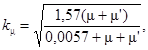
здесь μ, μ′ - коэффициенты армирования арматуры соответственно S и S';
ks - коэффициент, принимаемый равным при армировании:
одноосном...................... 1,0
двухосном....................... 1,2
трехосном....................... 1,5
ke - коэффициент, определяемый в зависимости от эксцентриситета армирования сечения es (расстояния между центром тяжести всей продольной арматуры и центром тяжести бетонного сечения) по формуле
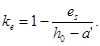
Самонапряжение бетона принимается равномерно распределенным по сечению (равнодействующая сил обжатия приложена в центре тяжести бетонного сечения).
Примечания: 1. Коэффициент ks для конструкций, выполняемых с применением НЦ-20, принимается во всех случаях равным единице.
2. Коэффициент ke для конструкций и их элементов (пространственных, при наличии жестких связей, стыков и т.п.) в процессе самонапряжения которых искривление или выгиб невозможны, принимается равным единице.
3.2. Самонапряжение бетона в стыковых соединениях определяется с учетом фактического армирования стыка конструкции (выпусков, стыковых стержней), условий упругого или иного ограничения деформаций стыка (например, отпора торцов обращенных в стык сборных элементов, закрепленных в основании), приведенных к эквивалентному армированию (по степени сопротивления расширению бетона) сечения стыка. При наличии в стыке выпусков или стыковых стержней, привариваемых к закладным деталям, самонапряжение бетона в стыке определяется по п. 3.1.
3.3. Предварительные напряжения в арматуре σcon2 и σ'con2 в результате самонапряжения бетона определяются из условия равновесия усилий обжатия в бетоне и растяжения в арматуре с учетом положения их равнодействующей в центре тяжести бетонного сечения по формулам:
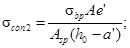
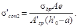
Для прямоугольного сечения предварительные напряжения в арматуре определяются по формулам:
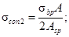
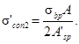
σbp - принимается по п. 3.1;
e, e′ - расстояния от равнодействующей обжатия бетона до арматуры соответственно S и S′.
3.4. Предельная величина предварительного напряжения σsp и σ′sp в рабочей арматуре соответственно S и S′ (в момент снижения величины самонапряжения в бетоне до нуля от внешних сил) определяется по формулам:
σ′sp = σ′con2 + vσbp. (9)
Предельная величина предварительного напряжения σsp и σ′sp рабочей арматуры не должна превышать 0,80Rs,ser.
В формулах (8) и (9) величины σcon2 и σ′con2 принимаются без учета потерь от ползучести и усадки бетона.
3.5. При расчете самонапряженных конструкций учитываются только потери предварительного напряжения арматуры от ползучести и усадки бетона в зависимости от марки бетона по самонапряжению и влажности среды.
3.6. Потери от ползучести бетона при загружении конструкции определяются как для тяжелого и легкого бетонов по поз. 9 табл. 5 и п. 1.26 СНиП 2.03.01-84. Полученное значение потерь умножается на коэффициент kφ, учитывающий влажность среды φ, %:
kφ = (2,9 - 0,02)φ. (10)
3.7. Потери от усадки бетона σ8 определяются по формуле
σ8 = kmε8Es, (11)
где ε8 - относительная усадка напрягающего бетона, принимаемая по табл. 4;
km - коэффициент, учитывающий размеры сечения элемента и определяемый по формуле
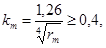
здесь rm - приведенный радиус поперечного сечения, см, определяемый как отношение площади к открытому периметру (не защищенному гидроизоляцией).
Таблица 4
|
Относительная влажность среды при эксплуатации конструкции, % |
Относительная усадка бетона ε8 · 105 при его проектной марке по самонапряжению |
||||
|
Sp0,6 |
Sp0,8 |
Sp1 |
Sp1,2 |
Sp1,5 |
|
|
1 |
2 |
3 |
4 |
5 |
6 |
|
Бетон на НЦ-20 |
|||||
|
95 |
10 |
13 |
17 |
20 |
24 |
|
90 |
30 |
33 |
37 |
40 |
60 |
|
70 |
60 |
66 |
74 |
80 |
90 |
|
50 |
90 |
96 |
105 |
110 |
118 |
|
30 |
120 |
130 |
144 |
150 |
165 |
|
Относительная влажность среды при эксплуатации конструкции, % |
Относительная усадка бетона ε8 · 105 при его проектной марке по самонапряжению |
||||
|
Sp1,2 |
Sp1,5 |
Sp2 |
Sp2,5 |
Sp3 |
|
|
1 |
7 |
8 |
9 |
10 |
11 |
|
Бетон на НЦ-40 |
|||||
|
95 |
10 |
12 |
17 |
20 |
24 |
|
90 |
30 |
32 |
37 |
40 |
60 |
|
70 |
60 |
64 |
74 |
80 |
90 |
|
50 |
90 |
92 |
105 |
110 |
118 |
|
30 |
120 |
126 |
144 |
150 |
165 |
Примечания: 1. При переменном влажностном режиме эксплуатации конструкций к указанным в табл. 4 величинам вводится коэффициент 0,8.
2. При двух- и трехосном армировании приведенные в табл. 4 величины умножаются на коэффициент 0,6.
3. Напрягающий бетон марок Sp2 и Sp4 соответственно на НЦ-20 и НЦ-40 должен применяться только в конструкциях, эксплуатируемых в постоянных влажных условиях (песчаный бетон).
3.8. В конструкциях, эксплуатируемых в постоянных влажных условия (например, резервуарах, подводных сооружениях и подземных сооружениях в грунтовых водах), потери самонапряжения от усадки могут не учитываться (вследствие восстановления полной величины самонапряжения во влажных условиях), если заранее известно и указано в проекте, что непосредственно перед загружением конструкция будет находиться во влажном состоянии не менее 4 сут. В сборных элементах таких конструкций потери самонапряжения учитываются только при расчете на монтажные нагрузки.
4.1. Выбор конструктивных решений следует производить в соответствии с основными положениями пп. 1.2 - 1.8 СНиП 2.03.01-84 и с учетом рекомендаций настоящего Пособия.
4.2. Сборно-монолитные конструкции при расчете на внешнюю нагрузку принимаются неразрезными (монолитными) до момента исчерпания самонапряжения по контакту сборных элементов и монолитного бетона.
4.3. Самонапряженные железобетонные конструкции должны удовлетворять требованиям расчета по несущей способности (предельные состояния первой группы) и по пригодности к нормальной эксплуатации (предельные состояния второй группы) согласно пп. 1.10 - 1.21 СНиП 2.03.01-84 и рекомендациям настоящего Пособия, учитывающего особенности самонапряженных конструкций.
4.4. Расчет по прочности элементов самонапряженных железобетонных конструкций (кроме элементов в защитной оболочке со спиральной арматурой на воздействие сжимающей продольной силы) производится как конструкций из тяжелого бетона в соответствии с требованиями пп. 3.1 - 3.49 СНиП 2.03.01-84, принимая расчетные характеристики материалов согласно рекомендациям разд. 2, а величину предварительного напряжения в арматуре от самонапряжения бетона - разд. 3 настоящего Пособия.
4.5. Расчет элементов сплошного сечения с косвенным армированием
в виде спирально расположенной арматуры в защитной стальной оболочке при
эксцентриситете приложения внешней нагрузки в пределах ядра сечения,
ограниченного спирально расположенной арматурой, при его гибкости 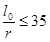
R*b,red = Rb,red - kA(Rb,red - Rsc), (13)
где Rb,red - приведенная призменная прочность бетона, ограниченного спиралью, определяемая по формуле (52) СНиП 2.03.01-84 с заменой коэффициента 2 коэффициентом эффективности спиральной арматуры ms, определяемым по формуле
ms = 2(1 + 0,03σbp), (14)
здесь σbp - величина предварительного обжатия сердечника, определяемая согласно п. 3.1;
kA - отношение площади поперечного сечения защитной стальной оболочки ко всему сечению элемента;
Rsc - расчетное сопротивление сжатию защитной стальной оболочки, принимаемое равным пределу текучести стали по ГОСТ 380-71, разделенному на коэффициент надежности, равный 1,05.
4.6. Расчет элементов самонапряженных железобетонных конструкций по образованию и раскрытию трещин следует производить как конструкций из тяжелого или легкого бетона в соответствии с положениями разд. 4 СНиП 2.03.01-84 с учетом самонапряжения бетона и напряжения арматуры согласно разд. 3, а также продольных и поперечных деформаций, определяемых согласно пп. 4.11 и 4.12 настоящего Пособия.
При расчете изгибаемых самонапряженных элементов на раскрытие наклонных трещин по формулам (152) и (153) СНиП 2.03.01-84 величина напряжения в хомутах σsw принимается уменьшенной на величину предварительного напряжения хомутов от самонапряжения, определяемую по п. 3.3 настоящего Пособия.
Допускается производить подбор сечений элементов этих конструкций по предельным состояниям второй группы при действии усилий или изгибающих моментов противоположных знаков (монтажных и эксплуатационных усилий, знакопеременных эпюр моментов в покрытиях полов при перемещении нагрузки, в шелыге и боковых участках трубы и т.п.) с помощью прямого метода, приведенного в рекомендуемом приложении 3, с последующей проверкой этих сечений расчетом по несущей способности согласно требованиям СНиП 2.03.01-84.
4.7. При расчете элементов самонапряженных железобетонных конструкций по образованию и раскрытию трещин, нормальных к продольной оси элемента, усилие P рассматривается как равнодействующая сил обжатия сечения с учетом потерь от ползучести и усадки бетона, определяемых в соответствии с указаниями пп. 3.1 и 3.5 - 3.8 настоящего Пособия.
По концам элементов учитывается снижение предварительного напряжения в арматуре на длине зоны передачи напряжений арматуры на бетон, согласно указаниям п. 2.29 СНиП 2.03.01-84, по линейному закону.
4.8. Расчет по образованию трещин, наклонных к продольной оси элемента (см. п. 4.11 СНиП 2.03.01-84), рекомендуется производить с учетом самонапряжения бетона во всех направлениях, по которым расположена арматура. Самонапряжение бетона определяется согласно п. 3.1 настоящего Пособия, при этом μ и μ′ вычисляются для каждого направления отдельно.
4.9. При расчете по закрытию трещин, нормальных к продольной оси элемента (см. п. 4.19 СНиП 2.03.01-84), нормальные напряжения сжатия σb на растягиваемой внешними нагрузками грани элемента должны быть не менее 0,2 МПа.
4.10. Расчет стыка, выполненного из напрягающего бетона, по предельным состояниям второй группы рекомендуется производить с учетом обжатия бетона и предварительного напряжения арматуры в соответствии с пп. 3.2 и 4.6 и сопротивления растяжению бетона, принимаемого равным Rbt,ser. По контакту бетона стыка и сборных элементов при действии нормальных растягивающих усилий учитываются только обжатие бетона стыка и предварительное напряжение арматуры. При действии сдвигающих сил по контакту бетона стыка и сборных элементов допускается учитывать сцепление этого бетона, равное по величине обжатию зоны контакта в результате самонапряжения.
4.11. Продольные деформации бетона в процессе самонапряжения, принимаемые одинаковыми с деформациями арматуры, εcon2 и ε′con2 при назначении деформационных швов определяются по формулам
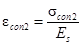 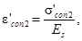
где σcon2, σ′con2 принимаются согласно п. 3.3.
Распределение продольных деформаций бетона по высоте сечения принимается по линейному закону, за исключением зоны передачи напряжений арматуры на бетон.
4.12. При расчете деформаций кривизна элементов самонапряженных
конструкций от самонапряжения бетона 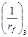
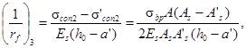
где σcon2, σ′con2 - определяются согласно п. 3.3;
σbp - принимается согласно п. 3.1.
Полную кривизну элемента для участка с трещинами в растянутой зоне, определяемую по формуле (170) СНиП 2.03.01-84, необходимо уменьшить на величину , определяемую по формуле (16) настоящего Пособия.
Выгиб элемента длиной l определяется по формуле
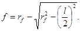
5.1. Перераспределение напряжений в сечении элемента с помощью силовой калибровки производится для увеличения обжатия бетона в крайних волокнах, подверженных наибольшим растягивающим напряжениям в стадии эксплуатации, с соответствующим повышением трещиностойкости самонапряженной конструкции.
Силовая калибровка - ограничение поперечных деформаций (выгиба) несимметрично армированных элементов в процессе самонапряжения, осуществляемое путем наложения жестких связей, например стального кондуктора (черт. 1, а), или попарным сплачиванием в пакет элементов, выгибы которых происходят навстречу один другому (черт. 1, б). При снятии этих связей после завершения процесса самонапряжения происходит перераспределение напряжений по сечению элемента, т.е. равнодействующая обжатия получает эксцентриситет ep относительно центра тяжести бетонного сечения.
Черт. 1. Силовая калибровка самонапряженных элементов
а - в кондукторе или пакетом с упором посредине; б - пакетом с упором по плоскости
5.2. При ограничении поперечных деформаций самонапряженного элемента с помощью жесткого кондуктора с упором посредине или эквивалентным способом - попарным сплачиванием в пакет с одной прокладкой между ними посредине (см. черт. 1, а) - эксцентриситет равнодействующей обжатия принимается равным ep = 1,5es в середине (под упором) с уменьшением до нуля на концах элемента по линейному закону. В этом случае при расчете σbp коэффициент ke в формуле (1) принимается равным единице.
5.3. При ограничении поперечных деформаций путем сплачивания элементов в пакет эксцентриситет равнодействующей ep определяется по формуле
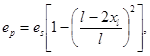
где l - длина элемента;
xl - расстояние от начала элемента до рассматриваемого сечения.
Коэффициент ke в формуле (1) при этом принимается равным единице.
5.4. Напряжения и деформации арматуры при силовой калибровке элементов определяются из условия равновесия с самонапряжением бетона, определяемым по формуле (1), с учетом рекомендаций пп. 5.2 и 5.3.
6.1. При проектировании самонапряженных железобетонных конструкций для обеспечения условий их изготовления, долговечности и надежности, а также совместной работы арматуры и бетона следует выполнять требования разд. 5 СНиП 2.03.01-84 для тяжелого бетона и рекомендации пп. 6.2 - 6.9 настоящего Пособия.
6.2. В самонапряженных железобетонных конструкциях толщиной свыше 40 см необходимо предусматривать временные или постоянные каналы для увлажнения бетона в процессе твердения, чтобы расстояние от внутренних зон до увлажняемой поверхности не превышало 25 см.
6.3. Армирование конструкций рекомендуется предусматривать в двух, предпочтительней - в трех, направлениях для создания объемного предварительного напряжения, а основную рабочую арматуру - располагать возможно ближе к направлению главных растягивающих напряжений, применяя в необходимых случаях пространственные каркасы и криволинейную арматуру.
6.4. Конструкция основания и сопряжение элементов самонапряженных железобетонных конструкций со смежными элементами зданий и сооружений должны обеспечивать возможную свободу перемещений в период расширения бетона.
6.5. В покрытиях больших площадей целесообразно устраивать скользящие слои из двух слоев и более полимерных пленок и других рулонных материалов, в том числе с графитовой пудрой (для снижения трения покрытия по основанию).
Расстояние между деформационными швами и их ширина определяются расчетом с учетом деформаций самонапряжения (см. п. 4.11) и температурных деформаций, а также типа конструкций.
6.6. Соединение элементов конструкций с целью повышения трещиностойкости и водонепроницаемости стыка, замоноличиваемого бетоном на напрягающем цементе, следует выполнять стыкованием арматуры внахлестку или сваркой выпусков арматуры (закладных деталей), рассчитанных на восприятие действующих в стыке усилий от расширения бетона и от внешних воздействий (черт. 2).
Величина нахлестки петлевых выпусков стыка, измеренная на прямолинейном участке C, должна быть не менее:
при полностью растянутом от действия внешних сил сечении - 15d;
при наличии сжатой зоны - 10d.
Черт. 2. Стык элементов самонапряженных железобетонных конструкций, работающих на растяжение (распределительная арматура и анкера закладных деталей условно не показаны)
а - при стыковании арматуры внахлестку; б - при стыковании арматуры сваркой; 1 - рабочая арматура элемента; 2 - закладная деталь; 3 - соединительные накладки
6.7. При замоноличивании бетоном на напрягающем цементе сборно-монолитных или монолитных с временной разрезкой швами конструкций последние должны быть связаны между собой или с основанием упругими связями (выносной арматурой, анкерами и т.п.) таким образом, чтобы действие распора при расширении бетона на напрягающем цементе в швах создавало в бетоне конструкций предварительное обжатие.
6.8. Для сокращения зоны анкеровки стержневой арматуры в самонапряженных элементах и обеспечения обжатия бетона по всей длине элементов рекомендуется (при соответствующем технико-экономическом обосновании) окаймлять торцы элементов стальным профилем (швеллером, уголком и т.д.) и заанкеривать в нем напрягаемую арматуру (например, контактной сваркой).
6.9. Для повышения трещиностойкости самонапряженного стыка по контакту бетона стыка и сборных элементов и использования на этих участках сопротивления бетона растяжению целесообразно выполнять торцевые участки элементов переменной толщины (см. черт. 2), при этом длина участков должна превышать их толщину не менее чем в 2 раза.
Обязательное
1. Самонапряжение напрягающего бетона на напрягающем цементе (НЦ) определяется при подборе состава и контроле качества бетона самонапряженных железобетонных конструкций для обеспечения расчетного самонапряжения конструкции - обжатия бетона и соответствующего натяжения арматуры.
2. Самонапряжение бетона Rbs определяется на контрольных образцах-призмах размером 10×10×40 см, отформованных и твердеющих при нормальных влажных условиях (см. пп. 8 и 9 настоящего приложения) в динамометрическом кондукторе, создающем в процессе расширения бетона образца упругое ограничение деформаций, эквивалентное продольному армированию, равному 1 %.
3. Для испытаний применяется следующее оборудование:
а) динамометрический кондуктор для образца-призмы размером 10×10×40 см (см. чертеж);
б) измерительное устройство («краб») с индикатором часового типа с ценой деления 0,01 мм для замера выгиба пластин кондуктора;
в) стальной эталон (пластина) для поверки измерительного устройства;
г) форма-опалубка (включающая днище и борта) для формования образца;
д) емкость с водой для хранения кондукторов с образцами.
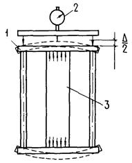
Динамометрический кондуктор для испытания образца-призмы размером 10×10×40 см
1 - динамометрический кондуктор; 2 - измерительное устройство с индикатором часового типа; 3 - бетонный образец-призма размером 10×10×40 см
4. Форма должна удовлетворять требованиям ГОСТ 22685-77.
5. До сборки кондуктора с формой производится затяжка гаек на тягах и снимается нулевой замер кондуктора с помощью измерительного устройства («краба»), предварительно поверенного с помощью эталона на постоянство отсчета.
Температура кондуктора, измерительного устройства и эталона во время замера должна быть одинаковой.
6. Перед формованием образца форма должна быть собрана в кондукторе с помощью скоб на тягах кондуктора с минимальным зазором для исключения деформаций тяг.
7. Контроль самонапряжения бетона производится на бетонном заводе или на объекте у места укладки бетона в конструкцию.
Формование образцов производится в соответствии с ГОСТ 10180-78.
8. Отформованные в кондукторе образцы укрываются пленкой или другим водонепроницаемым материалом для защиты от потерь влаги.
9. Твердение образцов в кондукторе с формой до достижения бетоном прочности 8 - 15 МПа (80 - 150 кгс/см2), но не менее суток должно происходить в помещении с температурой воздуха 20 ± 2 °С, дальнейшее твердение в кондукторе со снятой формой (до 28 сут) - в воде или в обильно влажных опилках, песке и т.п.
Образцы, предназначенные для производственного контроля самонапряженного бетона, должны храниться в условиях, аналогичных условиям твердения бетона в конструкции.
10. Замеры кондукторов производятся ежедневно для бетона в возрасте 1 - 7 сут и далее в возрасте 10, 14 и 28 сут каждый раз с поверкой измерительного устройства с помощью эталона.
11. Величина самонапряжения образца 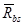
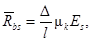
где Δ, l - соответственно полная деформация образца в процессе самонапряжения бетона и его длина;
μk - приведенный коэффициент армирования образца, принимаемый равным 0,01;
Es - модуль упругости стали кондуктора, принимаемый равным 2 · 105 МПа (2 · 106 кгс/см2).
12. Самонапряжение бетона Rbs вычисляется как среднее арифметическое по результатам замеров трех образцов-близнецов в кондукторах, отформованных из одной пробы бетона.
Рекомендуемое
Резервуар представляет собой цилиндрическую (полигональную) емкость, заполненную водой; D = 24 м; H = 3,6 м. Стенка из плоских панелей шириной 2,3 м (самонапряженные). Сопряжение с днищем - жесткое (заделка). Расчетная зона панели находится на расстоянии 0,4 Н от днища. Растягивающее усилие N = 200 кН/м. Изгибающий момент в середине панели (вследствие полигональности, т.е. несоответствия оси стены окружности емкости) M = 8 кН · м (черт. 1).
Черт. 1. Схема стенки цилиндрического резервуара
Принимаем сечение стенки h = 140 мм, самонапряженный бетон классов B30, Bt2,4, марки Sp1,5, т.е. Rb = 17 МПа; Eb = 24000 МПа; Rbt,ser = 2,4 МПа; Rbs = 1,2
МПа; сталь класса А-III; Rs = 365 МПа для
диаметров 10 -
40 мм; Es = 200000 МПа; 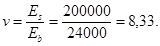
Производим расчет по прочности:
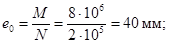
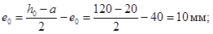
h0 = 140 - (15 + 5) = 120 мм;
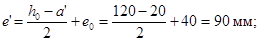
Ne ≤ RsA′s(h0 - a′); Ne′ ≤ RsAs(h0 - a);
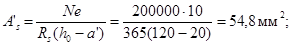
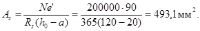
Принимаем арматуру Æ 10, шагом 150 мм (7 Æ 10 = 550 мм2).
Принимаем A′s ≥ 0,25As; As = 0,25 · 550 = 137 мм2; принимаем арматуру Æ 6, шагом 200 мм (5 Æ 6 = 142 мм2).
Суммарное армирование
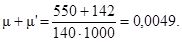
Напряжение обжатия бетона в сечении (самонапряжение)
σbp = Rbskμkske,
где
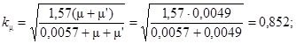
ks = 1,2;
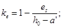 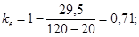
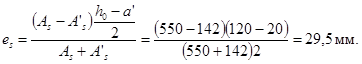
Таким образом, σbp = 1,2 · 0,852 · 1,2 · 0,71 = 0,87 МПа.
Проверяем напряжения в арматуре от самонапряжения:
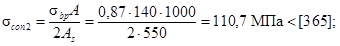
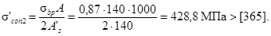
Увеличиваем сечение арматуры A′s до 7 Æ 6 = 200 мм2 (Æ 6, шаг 140 мм) соответственно:
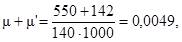
тогда
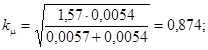
σbp = 1,2 · 0,874 · 1,2 · 0,71 = 0,89 МПа;
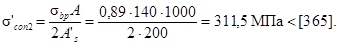
Проверяем сечение по трещиностойкости.
К самонапряженным емкостям предъявляются требования I категории трещиностойкости, т.е. образование трещин не допускается:
Mr = Mcrc;
Mcrc = Rbt,serWpl ± Mrp.
Для простоты расчета считаем нейтральную ось расположенной посредине высоты сечения (x = h/2):
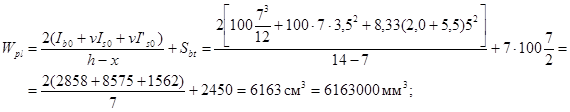
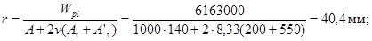
Mrp = P(e0p + r),
e0p = 0, так как обжатие равномерное; силовая калибровка не применяется, тогда:
Mrp = σbpAr = 0,87 · 1000 · 140 · 40,4 мм = 4920720 Н · мм;
Mr = N(e0 + r) = 200000(40 + 40,4) = 16080000 Н · мм = 16,1 · 106 Н · мм;
Mcrc = Rbt,serWpl + Mrp = 2,4 · 6163000 + 4920720 = 19711920 Н · мм = 19,7 · 106 Н · мм;
19,7 · 106 Н · мм > 16,1 · 106 Н · мм.
Следовательно, трещиностойкость обеспечена.
Если не нормировать марку бетона на осевое растяжение, то для бетона класса B30 можно принять Rbt,ser = 1,8 МПа и тогда
Mcrc = 1,8 · 6163000 + 4920720 = 16014120 = 16,01 · 106 Н · мм;
16,1 · 106 Н · мм ≈ 16,01 · 106 Н · мм,
т.е. трещиностойкость расчетом также обеспечивается. Это дает основание не контролировать на строительной площадке прочность бетона на осевое растяжение и нормировать только класс бетона по прочности на сжатие B30 и марку бетона по самонапряжению Sp1,5.
Труба (черт. 2) состоит из тонкостенной (δ = 1,5 мм) стальной спирально-сварной оболочки и железобетонного самонапряженного тела трубы с арматурным сварным каркасом. Снаружи оболочка защищена слоем асфальтопесчаной стяжки. Труба уложена в грунт на глубину H = 4 м.
Черт. 2. Многослойная самонапряженная труба
1 - тело трубы из напрягающего бетона; 2 - сварной арматурный каркас; 3 - стальная спирально-сварная оболочка; 4 - защитное покрытие
На трубу действуют ее вес, вес грунта, вес воды в трубе и внутреннее давление воды 0,75 МПа. Совокупность нагрузок создает в стенке трубы наибольшие расчетные изгибающие моменты в шелыге и под углом 105°: Mcrc = +2,27 кН · м; MIcrc = 3,24 кН · м; Ncrc = 150 кН; NIcrc = 150 кН.
В соответствии с п. 4.6 настоящего Пособия производим подбор сечения трубы с помощью прямого метода, изложенного в рекомендуемом приложении 3, с последующей проверкой его по СНиП 2.03.01-84.
Находим относительные характеристики сечения стенки трубы:
F = FI = 0,29; B = BI = 0,67; δN = δ′N = 0,5;
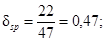
Δ = (0,67 - 0,47)(0,67 - 1 + 1) - (0,67 - 1)(0,67 - 1 + 0,47) = 0,18;
θ = 0,29(0,67 - 1 + 1) - 0,29(0,67 - 1) = 0,29.
Подставляя эти величины в формулы (4′) и (5′) рекомендуемого приложения 3, получим
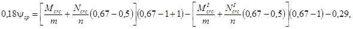
откуда
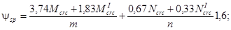
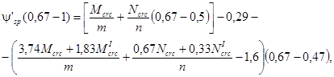
откуда
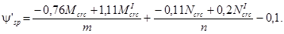
Подставляя величины расчетных нагрузок Mcrc, Ncrc, MIcrc, NIcrc, получим:
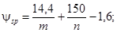
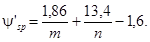
При применении бетона марки по самонапряжению Sp2,5 получим
σbp = Rbskμkske = 2,0 · 1 · 1,5 · 1 = 3,0 МПа.
При применении бетона класса Bt4,8 по табл. 2 настоящего Пособия находим Rbt = 3,7 МПа. Подставляя величины σbp и Rbt в уравнение (8), получим
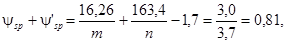
откуда
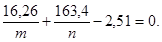
Подставляя мультипликаторы m и n, получим
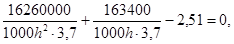
откуда
h2 - 17,6h - 1751 = 0.
Решая уравнение относительно h, получим
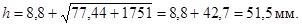
Принимаем h = 50 мм.
Находим величины мультипликаторов n и m:
n = 1000 · 50 · 3,7 = 185000 Н = 185 кН;
m = 1000 · 502 · 3,7 = 9250000 Н · мм = 9,25 кН · м.
Подставляя эти величины, получим:
Усилие в арматуре при нулевом напряжении бетона
Nsp = ψspn = 0,77 · 185 = 142,5 кН.
В наружном контуре арматура не требуется, и, следовательно, в предельном состоянии стальная оболочка является конструктивным элементом. По конструктивным соображениям толщину оболочки из стали класса A-III принимаем δ = 1,5 мм.
Находим необходимую площадь сечения сварного каркаса из проволоки класса Bp-I:
Необходимое число витков спирали в каркасе из проволоки диаметром 5 мм составит
что соответствует шагу спирали 5,0 см.
Проверяем подобранное сечение по СНиП 2.03.01-84 по образованию трещин:
Mr ≤ Mcrc; Mcrc = Rbt,serWpl ± Mrp;
Mr = N(e0 + r);
где
Положение нулевой линии:
x = 21,7 мм;
Проверяем условие для определения r:
тогда:
момент внешних сил
Mr = 150000(21,6 + 14,5) = 5415000 Н · мм = 5,4 кН · м;
момент сил обжатия
Mrp = σbpA(e0p + r) = 3,0 · 1000 · 50 · 14,5 = 2175000 Н · мм = 2,17 кН · м,
где e0p = 0 (см. п. 3.1 настоящего Пособия).
В результате момент Mcrc, воспринимаемый сечением при образовании трещин, равен:
Mcrc = 4,8 · 1015000 + 2175000 = 7047000 Н · мм = 7,01 кН · м;
Mcrc = 7,01 кН · м > 5,4 кН · м = Mr.
Таким образом, трещиностойкость обеспечена.
Расчет балки по предельным состояниям второй группы
Требуется выбрать наивыгодное экономичное по массе и армированию сечение двутавровой балки с расчетным пролетом l = 11,6 м при заданной расчетной нагрузке g = 25 кН/м, включающей вес балки. Возникновение трещин по нормальным, продольным и наклонным сечениям в заданных условиях недопустимо. Следовательно, балка является конструкцией I категории трещиностойкости, сечение которой рекомендуется подбирать по расчетной нагрузке.
Расчетный изгибающий момент Mcrc равен:
Изгибающий момент Mcrc от веса балки с учетом коэффициента динамического воздействия при транспортировании и монтаже m = 1,8 равен:
Для достижения минимальной массы и обеспечения соответствующей трещиностойкости балка должна иметь предварительное напряжение в продольном и поперечном направлениях.
В данном случае целесообразно использовать освоенное на заводах сборного железобетона механическое натяжение стержневой арматуры или канатов в продольном направлении и применять самонапряжение бетона на НЦ, обеспечивающего напряжение поперечной арматуры и снижение потерь напряжения в продольной арматуре, которое учитывается в конце расчета.
Такое решение позволит изготовить балку на любом заводе сборного железобетона, оборудованном формами или стендами механического предварительного напряжения, заменяя обычный портландцемент напрягающим цементом, выпускаемым многими заводами. Покажем, что для расчета и выбора основных параметров балки нет необходимости предварительно задаваться видом армирования балки, способом ее изготовления и условиями эксплуатации. Эти параметры могут быть выбраны в результате экономического сопоставления нескольких вариантов армирования на последнем этапе расчета и конструирования.
Обобщенные формулы (4) - (8) прямого метода, приведенного в рекомендуемом приложении 3, дают возможность сразу правильно выбрать необходимое армирование растянутой и сжатой зон балки; величины ψsp и ψ′sp принимаются в зависимости от нагрузок Mcrc и MIcrc.
Задаемся относительными характеристиками сечения балки, руководствуясь приведенными ранее рекомендациями и табл. 1 рекомендуемого приложения 3:
ψf = 0,3; ψ′f = 0,6; γ = 0,15; F = 0,386; B = 0,814; δsp = 0,06; δ′sp = 0,97;
δf = 0,06; δ′f = 0,06; FI = 0,358; BI = 0,769;
Mcrc = 425 кН · м; MIcrc = 71 кН · м.
Тогда по формулам (6) и (7) рекомендуемого приложения 3:
Δ = (0,814 - 0,06)(0,769 - 1 + 0,97) - (0,814 - 0,97)(0,769 - 1 + 0,06) = 0,558 - 0,026 = 0,53;
θ = [0,386 + 0,3(0,814 - 0,06)](0,769 - 0,03) - [0,358 + 0,6 × (0,769 - 0,06)](0,814 - 0,97) = 0,45 + 0,122 = 0,572.
Подставляем значения Mcrc, MIcrc и Δ, θ (Ncrc и NIcrc равны нулю) в уравнение (4):
получим
и усилие в абсолютных величинах, действующее в напряженной арматуре растянутой зоны,
Составляем табл. 1 различных значений Nsp, принимая величину Rbt,ser как для обычного тяжелого бетона. Определяем усилие в предварительно напряженной арматуре верхней зоны балки, преобразовав формулу (5) рекомендуемого приложения 3:
Таблица 1
Усилия Nsp для вариантов балки
|
Высота балки h, м |
Толщина стенки балки b, см |
Nsp, кН, при бетоне классов |
||
|
B40 |
B50 |
B60 |
||
|
0,8 |
4 |
708 |
699 |
693 |
|
5 |
691 |
682 |
673 |
|
|
6 |
677 |
664 |
653 |
|
|
0,9 |
4 |
618 |
613 |
605 |
|
5 |
601 |
591 |
581 |
|
|
6 |
582 |
572 |
560 |
|
|
1,0 |
4 |
532 |
529 |
520 |
|
5 |
518 |
507 |
496 |
|
|
6 |
498 |
490 |
478 |
|
Подставляя значение ψsp из предыдущего подсчета, получим
и в абсолютных величинах
Составляем табл. 2 различных значений N′sp, в которой приводим также коэффициент
Таблица 2
Усилия N′sp для вариантов балки
|
Высота балки h, м |
Толщина стенки балки b, см |
Усилие N′sp, кН |
Коэффициент |
||||
|
для бетона классов |
|||||||
|
B40 |
B50 |
B60 |
B40 |
B50 |
B60 |
||
|
0,8 |
4 |
237 |
227 |
219 |
0,33 |
0,32 |
0,31 |
|
5 |
216 |
205 |
194 |
0,31 |
0,30 |
0,29 |
|
|
6 |
197 |
182 |
169 |
0,29 |
0,27 |
0,26 |
|
|
0,9 |
4 |
191 |
181 |
174 |
0,31 |
0,30 |
0,29 |
|
5 |
168 |
156 |
143 |
0,27 |
0,26 |
0,25 |
|
|
6 |
145 |
131 |
115 |
0,25 |
0,23 |
0,21 |
|
|
1,0 |
4 |
153 |
142 |
130 |
0,28 |
0,27 |
0,25 |
|
5 |
128 |
114 |
100 |
0,25 |
0,23 |
0,20 |
|
|
6 |
103 |
86 |
70 |
0,21 |
0,18 |
0,15 |
|
Значения β, удовлетворяющие трещиностойкости балки, изменяются в пределах 0,15 - 0,33, что указывает на недопустимость произвольного назначения количества арматуры в верхней зоне балки, так как это приводит к большому перерасходу стали.
Например, если задаться отношением сечения арматуры β = 0,2, близко соответствующим отношению нагрузок , то из всех рассмотренных сечений балок и классов бетона только балки высотой h = 1 м, толщиной стенки b = 6 см при классах бетона B50 и B60 имеют моменты трещинообразования MIcrc соответственно 75 кН · м > 71 кН · м и 82 кН · м > 71 кН · м, удовлетворяющие трещиностойкости при монтажной нагрузке.
Расход стали на рабочую продольную арматуру балки характеризуется суммой усилий в арматуре S и S′, приведенной в табл. 3.
Таблица 3
Суммарные усилия Nsp + N′sp
|
Высота балки h, м |
Толщина стенки балки b, см |
Усилия (Nsp + N′sp), кН, при бетоне классов |
Масса балки, т |
||
|
B40 |
B50 |
B60 |
|||
|
0,8 |
4 |
945 |
926 |
912 |
1,82 |
|
5 |
907 |
887 |
867 |
2,28 |
|
|
6 |
874 |
846 |
822 |
2,74 |
|
|
0,9 |
4 |
809 |
794 |
779 |
2,06 |
|
5 |
769 |
747 |
724 |
2,56 |
|
|
6 |
727 |
703 |
675 |
3,08 |
|
|
1,0 |
4 |
685 |
671 |
650 |
2,28 |
|
5 |
646 |
621 |
596 |
2,85 |
|
|
6 |
601 |
576 |
548 |
3,42 |
|
Для того чтобы правильно оценить технические свойства балки, необходимо знать степень обжатия бетона растянутой зоны. Как правило, существенное перенапряжение в сжатой зоне балки не допускается во избежание проявления больших пластических деформаций и выгиба балки. Для схемы эксплуатационного загружения находим по формуле (14) рекомендуемого приложения 3 величину ψb:
По формуле (12) рекомендуемого приложения 3 определяем напряжение σb1:
Определяем ψ′b для схемы монтажного загружения по формуле (14) рекомендуемого приложения 3, учитывая, что ψN = 0:
Соответственно по формуле (13) рекомендуемого приложения 3 для данной схемы загружения составляем табл. 4 различных значений σb2.
Таблица 4
Напряжения σb2 для вариантов балки
|
Высота балки h, м |
Толщина стенки балки b, см |
Напряжение обжатия крайнего волокна σb2, МПа, при бетоне классов |
|||||
|
B40 |
B50 |
B60 |
|||||
|
Нагрузка |
|||||||
|
эксплуатационная |
монтажная |
эксплуатационная |
монтажная |
эксплуатационная |
монтажная |
||
|
0,8 |
4 |
28,9 |
40,5 |
28,6 |
40,3 |
28,4 |
40,0 |
|
5 |
22,8 |
32,1 |
22,5 |
31,9 |
22,3 |
31,6 |
|
|
6 |
18,7 |
28,4 |
18,4 |
26,2 |
18,2 |
25,9 |
|
|
0,9 |
4 |
22,6 |
31,7 |
22,3 |
31,5 |
22,1 |
31,2 |
|
5 |
17,7 |
24,9 |
17,4 |
24,7 |
17,2 |
24,4 |
|
|
6 |
14,4 |
20,4 |
14,1 |
20,2 |
13,9 |
19,9 |
|
|
1,0 |
4 |
17,9 |
25,2 |
17,6 |
25,0 |
17,4 |
24,9 |
|
5 |
14,0 |
19,8 |
13,7 |
19,6 |
13,5 |
19,3 |
|
|
6 |
11,5 |
16,2 |
11,0 |
16,0 |
10,8 |
15,7 |
|
Примечание. Все значения σb2 > Rbn являются недопустимыми (обведены в таблице жирной чертой).
Применение напрягающего бетона создает дополнительное усилие в арматуре, которое должно быть подобрано таким образом, чтобы компенсировать потери предварительного напряжения.
На этом основании в формулах (10) и (11) рекомендуемого приложения 3 суммарная величина потерь принята σb8 = 0.
Рассмотрим два варианта армирования балки:
1) стержневой арматурой класса A-IV, марки 20ХГ2Ц (по ГОСТ 5781-82), нормативным сопротивлением Rs,ser = 590 МПа (5900 кгс/см2);
2) высокопрочной гладкой проволокой диаметром 5 мм, класса B-II (по ГОСТ 7348-81), нормативным сопротивлением Rs,ser = 1200 МПа (12000 кгс/см2).
Для стержневой арматуры (при γsp = 0,9)
Для проволочной арматуры
Сводим в табл. 5 расход металла на рабочую арматуру обеих зон балки.
Таблица 5
Расход металла на балку
|
Высота балки h, м |
Толщина стенки балки b, см |
продольной арматуры балки |
Расход бетона на балку, м3 |
||||||
|
из стали класса A-IV, марки 20ХГ2Ц |
из высокопрочной проволоки класса B-II |
|
|||||||
|
Бетон классов |
|
||||||||
|
B40 |
B50 |
B60 |
B40 |
B50 |
B60 |
|
|||
|
0,8 |
5 |
- |
- |
24,8 224 |
- |
- |
9,3 84 |
0,88 |
|
|
6 |
- |
24,3 220 |
23,6 215 |
- |
9,1 83 |
8,9 81 |
1,06 |
|
|
|
0,9 |
4 |
- |
- |
22,0 198 |
- |
- |
8,2 74 |
0,79 |
|
|
5 |
- |
21,2 193 |
20,5 185 |
- |
7,9 72 |
7,7 70 |
1,00 |
|
|
|
6 |
20,6 186 |
20,0 181 |
19,3 175 |
7,7 70 |
7,5 68 |
7,2 65 |
1,20 |
|
|
|
1,0 |
4 |
- |
19,3 174 |
18,7 168 |
- |
7,2 65 |
7,0 63 |
0,88 |
|
|
5 |
18,5 167 |
18,0 163 |
17,3 156 |
6,9 62 |
6,7 61 |
6,5 59 |
1,10 |
|
|
|
6 |
17,4 165 |
16,5 149 |
15,8 143 |
6,5 59 |
6,2 56 |
5,9 53 |
1,32 |
|
|
Для выбора оптимальных формы, размеров и класса напрягающего бетона и армирования производим приближенный экономический расчет и, сопоставляя варианты, выбираем решение по суммарной стоимости исходных материалов. Можно считать, что в равных условиях производства и для конструкций одного типа допустимо экономическое сопоставление вариантов решений по суммарной стоимости исходных материалов.
Для подсчетов принята следующая стоимость материалов: 130 руб/т - для низколегированной стержневой арматуры класса A-IV, марки 20ХГ2Ц; 252 руб/т - для гладкой высокопрочной проволоки класса B-II; 16,4 руб/м3 - для бетона класса B40; 19 руб/м3 - для бетона класса B50; 22 руб/м3 - для бетона класса B60.
Составляем табл. 6 суммарной стоимости материалов самонапряженной и предварительно напряженной балок при двух видах продольного армирования - сталью класса A-IV и высокопрочной проволокой класса B-II. Анализируя данные табл. 6, отмечаем, что применение проволочной арматуры приводит к меньшей стоимости основных материалов конструкции, чем применение стержневой арматуры из стали класса A-IV, и, следовательно, к более экономичному решению конструкций.
Таблица 6
Стоимость материалов, руб., на одну балку
|
Высота балки h, м |
Толщина стенки балки b, см |
Балка со стержневой арматурой |
Сталь класса A-IV |
Бетон |
Высокопрочная проволока класса B-II |
Балка с проволочной арматурой |
||||||||||
|
при бетоне классов |
||||||||||||||||
|
B40 |
B50 |
B60 |
B40 |
B50 |
B60 |
B40 |
B50 |
B60 |
B40 |
B50 |
B60 |
B40 |
B50 |
B60 |
||
|
0,8 |
5 |
- |
- |
48,5 |
- |
- |
29,1 |
- |
- |
19,4 |
- |
- |
21,1 |
- |
- |
40,5 |
|
6 |
- |
48,5 |
51,0 |
- |
28,4 |
27,7 |
17,4 |
20,1 |
23,3 |
- |
20,9 |
20,4 |
- |
41,0 |
43,7 |
|
|
0,9 |
4 |
- |
- |
43,0 |
- |
- |
25,7 |
13,0 |
14,8 |
17,3 |
- |
- |
18,6 |
- |
- |
35,9 |
|
5 |
- |
43,9 |
46,0 |
- |
24,9 |
24,0 |
16,4 |
19,0 |
22,0 |
- |
18,1 |
17,6 |
- |
37,1 |
39,6 |
|
|
6 |
43,8 |
46,2 |
49,0 |
24,1 |
23,4 |
22,6 |
19,7 |
22,8 |
26,4 |
17,6 |
17,1 |
16,4 |
37,3 |
39,9 |
42,8 |
|
|
1,0 |
4 |
- |
39,0 |
41,2 |
- |
22,5 |
21,8 |
14,4 |
16,5 |
19,4 |
- |
16,4 |
15,9 |
- |
32,9 |
35,3 |
|
5 |
39,7 |
42,0 |
44,3 |
21,7 |
21,1 |
20,1 |
18,0 |
20,9 |
24,2 |
15,6 |
15,4 |
14,9 |
33,6 |
36,3 |
39,1 |
|
|
б |
41,9 |
44,5 |
47,4 |
20,3 |
19,4 |
18,4 |
21,6 |
25,1 |
29,0 |
14,9 |
14,1 |
13,3 |
36,5 |
39,2 |
42,3 |
|
Из рассмотренных вариантов сечения балки и ее армирования наиболее экономичными и легкими являются профили следующих балок: h = 0,8 м и b = 5 см при бетоне класса B60, h = 0,9 м и b = 4 см при бетоне класса B60 и h = 1 м и b = 4 см при бетоне класса B50 (черт. 3).
Черт. 3. Варианты сечения двутавровой самонапряженной балки с механическим напряжением продольной арматуры
Учитывая совокупность показателей стоимости и массы рассмотренных вариантов балки, а также возможность изготовления конструкций с тонкими стенками (например, при бетонировании балки в горизонтальном положении), целесообразно выбрать балку высотой h = 1 м, толщиной стенки b = 4 см из бетона класса B50 при стоимости материалов балки 39 и 32,9 руб. в зависимости от вида арматуры. В этом случае масса балки будет равна 2,28 т, расход металла на балку с продольной арматурой из стали марки 20ХГ2Ц составит 174 кг, а из высокопрочной проволоки - 65 кг.
Расчет выбранного сечения балки по предельным состояниям первой группы при стержневом армировании
Прочность выбранного сечения балки определяем по формуле (16′) рекомендуемого приложения 3:
Имеем:
asp = 6 см; a′sp = 97 см; γh = 15 см;
Rbt,ser = 225 МПа; R′sn = 1030 МПа;
N = 0;
Рассматриваем вариант нагружения балки вскоре после изготовления, когда потери еще мало проявились:
N′sp = 2,75(48,6 - 40) = 2,75 · 8,6 = 23,5 кН;
N′f = 0,6 · 225 = 540 кН.
Подставляя значения в формулу (16) рекомендуемого приложения 3, получим
M = 554(1 - 0,02) + 23,5(1 - 0,97) - 540(0,075 - 0,02) = 543 + 0,7 - 30,5 = 513,2 кН · м > 504 кН · м,
при этом по формуле (16) рекомендуемого приложения 3
Находим координату центра тяжести:
Проверяем условие (17) рекомендуемого приложения 3 при .
Для принятых относительных характеристик
что и должно быть, поскольку при расчете по трещиностойкости не допускалось перенапряжение в сжатой зоне балки.
Расчет главных растягивающих и сжимающих напряжений при нормативной нагрузке
Главные растягивающие и сжимающие напряжения определяются в сечении, находящемся на расстоянии 1 м от опоры, где обычно заканчивается уширение стенки балки над опорой, а наименьшая величина h = 4 см предельно приближена к опоре. Нормативная нагрузка на опору кН.
Для установления марки бетона по самонапряжению и степени армирования тонкой стенки балки производим ее расчет по трещиностойкости и по прочности в относительных единицах.
Находим площадь и момент инерции сечения балки по формулам (18) и (19) при δ0 = 0,6:
F = (1 + ψ′f + ψf)bh = (1 + 0,6 + 0,3)bh = 1,9bh;
Статический момент сечения определяется для любой точки на расстоянии x от верха балки в обобщенном виде по формуле (20) рекомендуемого приложения 3:
По заданным размерам для точек, находящихся на центральной оси балки при x = 1 - δ0, получим
а у места примыкания стенки к верхней полке балки при x = 0,15
Sv = bh2[0,15(-0,6)2 + 0,6(1 - 0,6 - 0,06)] = 0,225bh2.
Определяем приближенно нормальные напряжения на оси центра тяжести балки у опоры по формуле (21) рекомендуемого приложения 3 при h = 1 м, b = 4 см и бетоне класса B50:
A = 1,9bh = 1,9 · 100 · 4 = 760 см2;
В зоне примыкания к верхней полке σbγ = 0.
Находим касательные напряжения τ0 и τγ на этих участках:
Для определения главных напряжений на этих участках находим самонапряжение, задаваясь маркой напрягающего бетона. Пользуясь табл. 3 и формулами (1) - (3) настоящего Пособия, находим
σbp = Rbskμkske,
где
При использовании стержневой арматуры при μ + μ′ = 0,017kμ = 1,3; при использовании проволочной арматуры при μ + μ′ = 0,0073kμ = 0,83. Для двухосного армирования ks = 1,2.
Коэффициент ke можно принять равным единице.
Тогда при использовании стержневой арматуры
σbp = 2 · 1,3 · 1,2 · 1 = 3,1 МПа;
при использовании проволочной арматуры
σbp = 2 · 0,83 · 1,2 · 1 = 2 МПа.
Главные напряжения по формуле (23) рекомендуемого приложения 3 при использовании стержневой арматуры будут равны:
σmc = -18,8 МПа < 28 МПа;
σmt = -1,8 МПа < 3 МПа.
Главные напряжения по формуле (23) рекомендуемого приложения 3 при использовании высокопрочной арматурной проволоки будут равны:
σmc = -18,45 МПа < 28 МПа;
σmt = -1,05 МПа < 3 МПа.
Определяем необходимое сечение Asx поперечной арматуры:
при стержневой арматуре
или 7 Æ 8 мм;
при высокопрочной арматурной проволоке
или 5 Æ 6 мм.
Самонапряжение σsx в арматуре Asx соответственно равно:
Определяем потери самонапряжения от усадки и ползучести бетона. При влажности φ = 0,7 для напрягающего бетона марки Sp2,5 по табл. 4 настоящего Пособия имеем полную усадку ε8 = 74 · 10-5. Поправка на переменность режима и двухосное ограничение деформации дает усадку
ε8 = 74 · 10-5 · 0,8 · 0,6 = 48 · 10-5.
Ползучесть бетона для балок с подобным армированием, когда исключено какое-либо перенапряжение крайних фибр балки, не превышает 60 · 10-5. Суммарная деформация составит
ε8 + ε9 = (48 + 60)10-5 = 108 · 10-5.
Потери напряжений в арматуре составят
Δσs = 108 · 10-5 · 2 · 106 = 216 МПа.
Дополнительное растягивающее усилие в арматуре от самонапряжения при коэффициенте армирования μ = 0,017 составит
Самонапряжение почти полностью компенсирует потери напряжения в арматуре балки.
Покрытие склада представляет собой армобетонную неразрезную плиту толщиной h, лежащую на упругом основании (грунте), на которую действует широко расставленная сосредоточенная нагрузка от колес стоящей или движущейся транспортной машины, вызывающая изгибающие моменты M = 28 кН · м и M = 21 кН · м. Кроме того, при изменении температуры окружающего воздуха свободные концы плиты покрытия длиной в каждую сторону 40 м удлиняются или укорачиваются, скользя по гравийно-щебеночному основанию, в результате чего в средней части покрытия возникают сжимающие или растягивающие усилия.
Принимая предварительную толщину плиты h = 21 см, коэффициент трения между плитой и основанием μ = 0,5, получим предельное усилие, возникающее в средней части покрытия как результат охлаждения плиты на 30 °С:
N = 0,21 · 25 · 0,5 · 40 · 105 кН.
Перемещение концов плиты при этом составит 10-5 · 30 · 40 · 103 = 12 см.
Расчетные усилия при коэффициенте перегрузки n = 1,2 составят:
Mcrc = 28 · 1,2 = 33,4 кН · м; Ncrc = 105 · 1,2 = 126 кН;
MIcrc = 21 · 1,2 = 26 кН · м; NIcrc = 126 кН.
Для плиты покрытия:
F = FI = 0,29; B = BI = 0,67; δN = δIN = 0,5;
δsp = 0,12; δ′sp = 0,88; ψ′f = 0; ψf = 0.
Подставляя указанные значения в формулы (4) - (7) рекомендуемого приложения 3, получим:
Δ = (0,67 - 0,12)(0,67 - 1 + 0,88) - (0,67 - 0,88)(0,67 - 1 + 0,12) = 0,258;
θ = 0,29(0,67 - 1 + 0,88) - 0,29(0,67 - 0,88) = 0,22;
откуда
Подставляя величины ψsp и ψ′sp в уравнение (8) рекомендуемого приложения 3, получим:
Подставляя величины M и N, получим
откуда
Принимаем напрягающий бетон класса B70 с расчетным сопротивлением по прочности на осевое растяжение для предельного состояния второй группы Rbt,ser = 3,3 МПа, марка бетона по самонапряжению Sp2.
Учитывая, что покрытие будет вводиться в эксплуатацию не ранее 3 мес, в соответствии с рекомендациями п. 2.5 вводим коэффициент 1,3, тогда
σbt,ser = 1,3 · 3,3 = 4,2 МПа.
Находим самонапряжение бетона σbp при двухосном армировании μ = 0,002, пользуясь табл. 2 и формулами (1) - (3) настоящего Пособия:
σbp = Rbskμkske,
где
ks = 1,2; ke = 0,9,
тогда
σbp = 1,6 · 0,67 · 1,2 · 0,9 = 1,15 МПа.
Подставляя величины Rbt,ser и Rbp, получим:
Находим мультипликаторы m и n в общем виде:
m = bh2Rbt,ser = 1000h2 · 4,2 = 4200h2 кН · м;
n = bhRbt,ser = 1000h · 4,2 = 4200h кН.
Подставляя мультипликаторы m и n, получим:
h2 - 0,016h - 0,022 = 0.
Определяем оптимальную высоту сечения h:
Принимаем толщину плиты h = 16 см.
Мультипликаторы m и n будут иметь следующие значения:
m = 1000 · 1602 · 4,2 = 107 кН · м;
n = 1000 · 160 · 4,2 = 670 кН.
Подсчитываем относительные величины усилий ψsp и ψ′sp в арматуре:
Подставляя значения m и n, получим:
Определяем усилия в арматуре при нулевом напряжении в бетоне:
Nsp = ψspn = 0,11 · 670 = 74 кН;
N′sp = ψ′spn = 0,02 · 670 = 13 кН.
Определяем необходимую площадь арматуры класса A-IV по формуле (10) рекомендуемого приложения 3:
Определяем значение σb8.
Для района расположения завода в восточной зоне минимальная влажность воздуха φ = 70 %. Тогда по табл. 4 настоящего Пособия для бетона марки Sp2 при двухосном армировании и переменном влажностном режиме усадка составит
ε8 = 0,8 · 0,6 · 74 · 10-5 = 38 · 10-5.
Потери напряжения от ползучести по расчетам составят
ε9 = 50 · 10-5.
Полные потери напряжения от усадки и ползучести составят
Δσsp = (ε8 + ε9)Es = (38 + 50)10-5 · 2 · 106 = 176 МПа.
Находим площадь арматуры:
Прямым подбором получено экономичное, характерное для армобетона сечение плиты покрытия.
Напорные самонапряженные трубы предназначены для трубопроводов диаметром 7,5 м ГАЭС, длиной 600 м с разностью отметок между бассейнами 100 м, рассчитанных на рабочее давление 1,6 МПа.
Конструкция трубы представляет собой (черт. 4) самонапряженный трубчатый сердечник 9, спирально обвитый канатной арматурой 6, которая защищена от повреждений или коррозии толстым слоем самонапряженного железобетона 5 толщиной 80 мм. Сердечник армируется арматурным каркасом 1, а защитный слой - сеткой 7. Полигон для производства самонапряженных труб располагает формами, позволяющими получать трубы со стенкой толщиной 330 и 400 мм. Трубы предназначены для укладки в траншею с засыпкой на высоту 2 м над шелыгой.
Для напрягающего бетона напорных труб большого диаметра применяем свойственный напрягающему бетону высокий класс прочности на осевое растяжение Bt4,8, которому по табл. 2 настоящего Пособия соответствует сопротивление Rbt,ser = 3,7 МПа. Учитывая, что трубопровод будет вводиться в эксплуатацию после полугодия со дня изготовления труб, вводим, согласно рекомендациям п. 2.5 настоящего Пособия, повышающий коэффициент 1,4, тогда
Rbt,ser = 1,4 · 3,7 = 5,2 МПа.
Рассматриваем два типоразмера напорных самонапряженных труб со стенками толщиной:
|
I |
типоразмер |
- |
250 |
+ |
80 |
= 330 см; |
|
(сердечник) |
(защитный слой) |
|||||
|
II |
« |
- |
320 |
+ |
80 |
= 400 см. |
|
(сердечник) |
(защитный слой) |
В табл. 7 приведены коэффициенты к нагрузкам М и N (черт. 5), действующим на трубопровод в траншее на глубине H над шелыгой.
Для расчета армирования трубы (см. черт. 4) предварительно напряженным канатом 11 и сварными сетками 1 и 7 имеем:
|
для трубы со стенкой толщиной h = 330 мм |
для трубы со стенкой толщиной h = 400 мм |
|
r = 4,08 м - внешний радиус; r0 = 3,75 м - внутренний радиус; Df = 8,16 м - внешний диаметр; H = 2,0 м - земля над шелыгой. |
r = 4,15 м - внешний радиус; r0 = 3,75 м - внутренний радиус; Df = 8,30 м - внешний диаметр; H = 2,0 м - земля над шелыгой. |
Черт. 4. Конструкция самонапряженной железобетонной трубы диаметром 7,5 м
1 - внешний каркас; 2 - внутренний каркас; 3 - внутренний паз; 4 - наружный паз; 5 - защитный слой; 6 - спиральная намотка; 7 - арматурная сетка (конструктивная); 8 - анкер намотки; 9 - сердечник; 10 - каналы; 11 - продольные канаты
Для расчета величин нагрузок Mcrc и Ncrc на трубу диаметром 7,5 м пользуемся черт. 5, где приведены нагрузки на каждый из четырех участков трубопровода, на которые разбита линия трубопровода. В табл. 7 приведены нагрузки нижнего наиболее нагруженного участка трубопровода.
Таблица 7
Коэффициенты x и y к нагрузкам M и N
|
Нагрузка от веса |
Угол θ, град |
Формула |
Результаты расчет для труб типоразмеров |
|
||||
|
0 |
105 |
180 |
||||||
|
330 |
400 |
|
||||||
|
Коэффициент x |
|
|||||||
|
M, кН · м |
Трубы |
-0,07 |
+0,088 |
-0,122 |
xr(2,4 · 2πrh) |
828x |
1039x |
|
|
Земли |
-0,067 |
+0,089 |
-0,126 |
|
1118x |
1155x |
|
|
|
Воды |
-0,07 |
+0,088 |
-0,122 |
xr(1,0πr20) |
1802x |
1833x |
|
|
|
Коэффициент y |
|
|||||||
|
N, кН · м |
Трубы |
-0,061 |
+0,297 |
+0,207 |
y(2,4 · 2πrh) |
203y |
250y |
|
|
Земли |
+0,383 |
+0,539 |
+0,327 |
|
274y |
278y |
|
|
|
Воды |
-0,220 |
-0,062 |
-0,272 |
y(1,0πr20) |
442y |
42y |
|
|
Черт. 5. Суммарная эпюра изгибающих моментов в стенках трубы
Нормативные и расчетные нагрузки на трубу приведены в табл. 8 и 9.
Таблица 8
Нагрузки на трубу со стенкой толщиной h = 330 мм
|
Сечение под углом θ, град |
От веса |
От внутреннего давления Np = pr0b |
Итого нагрузки |
|||
|
трубы |
земли |
воды |
нормативные |
расчетные |
||
|
Изгибающие моменты M, кН · м |
||||||
|
0 |
-58 |
-74,9 |
-126,2 |
- |
-259 |
-285 |
|
105 |
+72,8 |
+99,5 |
+158,6 |
- |
+331 |
+364 |
|
180 |
-101,1 |
-140,8 |
-219,9 |
- |
-462 |
-508 |
|
Нормальные усилия N, кН |
||||||
|
0 |
-12,4 |
+104,9 |
-87,2 |
-6000 |
-6005 |
-6600 |
|
105 |
+60,3 |
+147,6 |
-27,4 |
-6000 |
-5820 |
-6490 |
|
180 |
+42,0 |
+89,6 |
-120,2 |
-6000 |
-5990 |
-6588 |
Таблица 9
Нагрузки на трубу со стенкой толщиной h = 400 мм
|
Сечение под углом θ, град |
От веса |
От внутреннего давления Np = pr0b |
Итого нагрузки |
|||
|
трубы |
земли |
воды |
нормативные |
расчетные |
||
|
Изгибающие моменты M, кН · м |
||||||
|
0 |
-72 |
-77 |
-128 |
- |
-278 |
-306 |
|
105 |
+91 |
+102 |
+161 |
- |
+355 |
+391 |
|
180 |
-126 |
-145 |
-223 |
- |
-496 |
-545 |
|
Нормальные усилия N, кН |
||||||
|
0 |
-15 |
+106 |
-97 |
-6000 |
-6005 |
-6606 |
|
105 |
+74 |
+105 |
-27 |
-6000 |
-5803 |
-6383 |
|
180 |
+51 |
+91 |
-120 |
-6000 |
-5977 |
-6575 |
Подсчитываем значения мультипликаторов при расчетном сопротивлении напрягающего бетона Rbt ser = 5,2 МПа для всех рассматриваемых значений h = 330 мм и h = 400 мм:
при h = 330 мм n = bhRbr,ser = 1000 · 330 · 5,2 = 1716000 Н = 1716 кН;
m = bh2Rbt,ser = 1000 · 3302 · 5,2 = 565280000 Н · мм = 566 кН · м;
при h = 400 мм n = 1000 · 400 · 5,2 = 2080000 Н = 2080 кН;
m = 1000 · 4002 · 5,2 = 832000000 Н · мм = 832 кН · м.
Для одновременного действия двух систем нагрузок Mcrc и Ncrc, MIcrc и NIcrc используем формулы (4′) - (7′) рекомендуемого приложения 3.
Для труб со стенкой толщиной h = 330 мм и P = 1,6 МПа имеем:
F = FI = 0,20; B = BI = 0,67; δN = δIN = 0,5;
θ = 180°; Mcrc = 508 кН · м; Ncrc = 6588 кН;
θ = 105°; MIcrc = 364 кН · м; NIcrc = 6491 кН;
n = 1716 кН; m = 566 кН · м.
По формулам (6′) и (7′) рекомендуемого приложения 3:
Δ = (0,67 - 0,12)(0,67 - 1 + 1,12) - (0,67 - 1,12)(0,67 - 1 + 0,12) = 0,34;
θ = 0,29(0,67 - 1 + 1,12) - 0,29(0,67 - 1,12) = 0,36.
Подставляем значения в формулы (4′) и (5′) рекомендуемого приложения 3:
Учитывая целесообразность передачи главного усилия от давления воды 1,6 МПа на предварительно напрягаемую спиральную обмотку, расцениванием ее в виде усилия Nsp = 6000 кН (102 витка каната класса К-7, Æ 9 мм), прибавляем и вычитаем из выражения ψsp величину ,
тогда
Разбиваем это уравнение на два:
Подставляем для ψsp1 значения n и m:
что дает для арматуры в сетке
Nsp = ψsp1n = 0,67 · 1716 = 1150 кН.
Следовательно, площадь рабочей арматуры в сетке из стержней Æ 16 мм из стали класса A-I при расчетном ее сопротивлении растяжению для предельного состояния второй группы Rs,ser = 235 мПа составит
Принимаем армирование из 29 Æ 16 мм, класса A-I.
Армирование защитного слоя определяется по формуле (4) рекомендуемого приложения 3:
или
откуда
ψsp1 = -0,04,
т.е. расчетная арматура в защитном слое не требуется. Армируем защитный слой конструктивной сеткой из проволоки Æ 4 мм.
Для труб со стенками толщиной h = 400 мм и P = 1,6 МПа ψsp для арматурных сеток равен:
Необходимо также задаться числом витков арматуры и усилием, воспринимающим внутреннее давление. Рассмотрим случай, когда сохранены 102 витка каната класса К-7, Æ 9 мм и, следовательно, Nsp = 6000 кН. Тогда имеем расчетное уравнение для арматурной сетки
Подставляя значения n и m, получим
т.е. расчетная арматура в сердечнике не требуется.
Перед проектировщиком возникают возможности либо армировать сердечник легкой проволочной сеткой, либо уменьшить число витков обмотки и получить расчетное армирование сердечника.
Представленный порядок расчета целесообразно с технологических позиций выполнить для остальных участков трубопровода, меняя лишь число витков каната класса К-7, Æ 9 мм.
Целесообразно при расчете трубы со стенкой толщиной h = 400 мм ориентироваться на сетку с расчетной арматурой из стержней диаметром 12 мм того же класса A-I.
Такие расчеты рекомендуется выполнять самим для овладения приемами прямого метода расчета.
Рекомендуемое
1. ОБЩИЕ ПОЛОЖЕНИЯ
В СНиП 2.03.01-84 не приводятся рекомендации по предварительному назначению геометрических характеристик сечений конструкций, класса бетона, вида, количества и расположения арматуры, величины ее предварительного напряжения.
Для многих, особенно сборных железобетонных конструкций выбор оптимальных размеров конструкции, ее формы, высоты, ширины и т.д. опытному проектировщику не составляет больших трудностей, и можно ожидать, что заданные или принятые им размеры будут оптимальны по весу (расходу бетона), по затратам металла и стоимости.
Однако на деле, особенно в монолитном и сборно-монолитном строительстве, для самонапряженных и для сочетания самонапряженных с механическим предварительным напряжением объектов (конструкций или сооружений), во-первых, всегда действуют две системы нагрузок M, N и MI, NI или M и MI разных знаков; во-вторых, существует самонапряжение в одном, двух и трех направлениях. Естественно, выбрать заранее оптимальные размеры проектируемого объекта практически невозможно. Для этой цели в помощь проектировщикам в «Инструкции по проектированию самонапряженных железобетонных конструкций» (СН 511-78), утвержденной Госстроем СССР в 1978 г., наряду с традиционным методом был изложен прямой метод расчета конструкций в относительных единицах всех действующих параметров при двух системах нагрузок M, N и MI, NI, позволяющий, не задаваясь для объекта величинами характеристик сечения, ожидаемых потерь напряжений и используя метод разделения переменных, найти окончательные уравнения путем составления матриц различных возможных решений (конкретных размеров объекта и его армирования).
Эти матрицы с точки зрения затраты металла, расхода бетона или стоимости позволяют выбрать окончательные параметры для рассматриваемого объекта (размеры сечений и армирование).
Выбрав размеры объекта по таким показателям и учитывая требования СНиП 2.03.01-84, необходимо произвести проверку параметров объектов по предельным состояниям первой группы.
Конструкции и сооружения, для которых особенно полезен такой подход, включают:
все большепролетные сборные железобетонные конструкции;
протяженные сооружения покрытий дорог, аэродромов, производственных площадей, полов зданий;
трубы гидротехнических и мелиоративных сооружений;
сооружения промышленного, гражданского и транспортного назначения;
резервуары для воды и светлых нефтепродуктов;
вертикальные стволы шахт;
различные стержневые статически неопределимые системы и т.д.
Таким образом, рекомендации изложенного прямого метода расчета оптимальных параметров рассчитываемого объекта позволяют проектировщику заложить оптимальные параметры объекта при расчете самонапряженных и предварительно напряженных конструкций и сооружений в соответствии со СНиП 2.03.01-84.
Самонапряженные конструкции являются разновидностью предварительно напряженных железобетонных конструкций. Особенностью самонапряженных конструкций является напряжение всей расположенной в бетоне арматуры независимо от ее направления. Величина напряжений в арматуре и бетоне, возникающих в процессе расширения бетона совместно с заанкеренной в нем арматурой, зависит от технологических и конструктивных факторов (количества арматуры, расположения ее в сечении - симметричного, несимметричного, в двух или трех направлениях, дополнительных силовых или упругих связей - примыкания к смежным конструкциям, трения по основанию и т.п.).
Конструктивная форма, вид армирования и характер нагружения современных конструкций и сооружений настолько усложнились, что, применяя самонапряженный железобетон, а в некоторых случаях - одновременно и механическое преднапряжение арматуры, приходится прибегать в расчетах подобных конструкций к постепенному приближению оптимальных высоты, ширины и класса бетона, выполнению многократных пересчетов, что чрезвычайно громоздко и трудоемко.
В связи с этим особое значение приобретают практические методы проектирования и расчета, позволяющие находить оптимальные сечения бетона и арматуры, в том числе при воздействии эксплуатационных, монтажных или других нагрузок, вызывающих в конструкциях внутренние усилия и напряжения другого знака.
Рекомендуемый прямой метод расчета позволяет подбирать сечения предварительно напряженных и самонапряженных конструкций одновременно с учетом этих двух различных воздействий.
Противоположные по знаку усилия могут возникать в различных участках конструкции и при одном воздействии (например, в стенке напорной трубы, в шелыге и боковых участках), в покрытиях дорог и аэродромов, неразрезных заводских площадях и полах (под сосредоточенной нагрузкой и на некотором расстоянии) и в других случаях, но армировать такие конструкции нужно постоянно по всей длине с обеих сторон.
Применяется метод разделения переменных характеристик на две группы: 1-я - изменяющиеся, т.е. требующие определения расчетом, и 2-я - принятые в расчете неизменными и назначаемые по правилам разд. 2 настоящего приложения в виде относительных величин. В качестве изменяющихся характеристик обычно рассматриваются b, h, Rbt,ser, As и A′s.
При расчете самонапряженных конструкций прямым методом необходимо руководствоваться следующими положениями:
1. Подбор сечения производится на расчетные внутренние усилия в конструкции M и N и противоположного знака M и N (усилие может иметь тот же знак).
2. В основу расчета положено основное напряженном состояние конструкции при действии условных внешних сил M0, N0 и MI0, NI0, создающих в сечении треугольную эпюру напряжений (черт. 1). В этом случае усилия в арматуре известны:
N0 = Asσsp; N′0 = Asσ′sp, (1)
где обычно при использовании стали одной марки для арматуры As и A′s
σsp = σ′sp.
Черт. 1. Основное напряженное состояние конструкции при действии условных внутренних сил M0, N0 и MI0, NI0
3. Любое сложное поперечное сечение элемента рассматривается в обобщенном виде (черт. 2), при этом его прямоугольная часть bh является основой конструкции, принятой за единицу; δf(1 - δ′f), δsp, δ′sp - отношение расстояний от точек приложения усилий, действующих соответственно в уширениях, свесах и арматуре, до низа самонапряженной конструкции к высоте сечения. Эти характеристики показаны на черт. 3 для общего случая предварительного напряжения, когда в сечении имеется и ненапряженная арматура. Для самонапряженных конструкций ψs, ψ′s, δs и δ′s равны нулю.
Черт. 2. Различные формы поперечного сечения изгибаемых предварительно напряженных конструкций, применяемых в промышленном и гражданском строительстве
1 - 10 - варианты формы сечения; «св.» и «уш.» - сокращенное обозначение свесов и уширений
Черт. 3. Относительные характеристики и напряженное состояние сечения конструкции в стадии трещинообразования при действии усилий Mcrc и Ncrc от эксплуатационной нагрузки и M′crc и N′crc - от эксплуатационной нагрузки другого знака или от монтажной нагрузки
4. Для характеристики сопротивления бетонного сечения действию растяжения и изгиба вводятся мультипликаторы n и m рассчитываемой конструкции:
n = bhRbt,ser; m = hn = bh2Rbt,ser, (2)
с помощью которых усилия в арматуре Nsp и N′sp выражаются в относительных величинах ψsp и ψ′sp, которые определяются по формулам
(3)
Аналогично выражаются относительные характеристики ψsp и ψ′sp усилий, действующих в момент трещинообразования соответственно в свесах, уширениях, а также относительные характеристики ψN и ψ′b - внешней продольной силы Ncrc и суммы всех усилий растяжения Nsp + N′sp + Nf.
Рассмотрение конструкции в обобщенном виде позволит прямым расчетом получить величины ψsp и ψ′sp для нижней и верхней предварительно напряженной арматуры без назначения размеров сечения и прочности материалов конструкции, как это обычно принято делать.
5. Уравнения равновесия сил (знак «плюс» - растяжение) составляются в относительных единицах:
где
Δ = (B - δsp)(BI - 1 + δ′sp) - (B - δ′sp)(BI - 1 + δsp); (6)
θ = [F + ψf(B - δf)](BI - 1 + δ′sp) - [FI + ψ′f(BI - δ′f)](B - δ′sp), (7)
где F, FI - удельные сопротивления бетонных сечений в обобщенном виде с учетом свесов;
B, BI - относительные расстояния от места приложения равнодействующей всех сил сжатия от низа конструкции.
Величины F, FI и B, BI принимаются по табл. 1 прямого метода расчета.
Таблица 1
Коэффициенты F и B прямого метода расчета
|
Коэффициенты при ψ′f, равном |
|||||||||||
|
-0,1 |
0 |
0,1 |
0,2 |
0,3 |
0,4 |
0,6 |
1 |
2 |
4 |
8 |
|
|
0 |
0,221 0,584 |
0,292 0,676 |
0,340 0,732 |
0,372 0,773 |
0,395 0,803 |
0,413 0,827 |
0,436 0,862 |
0,462 0,903 |
- |
- |
0,500 1,000 |
|
0,05 |
0,229 0,592 |
0,292 0,676 |
0,334 0,727 |
0,362 0,764 |
0,382 0,729 |
0,397 0,814 |
0,419 0,846 |
0,441 0,884 |
0,461 0,926 |
- |
0,475 0,975 |
|
0,10 |
0,236 0,600 |
0,292 0,676 |
0,328 0,727 |
0,352 0,756 |
0,369 0,780 |
0,383 0,801 |
0,402 0,829 |
0,421 0,866 |
0,439 0,904 |
- |
0,450 0,950 |
|
0,15 |
0,240 0,607 |
0,292 0,676 |
0,323 0,716 |
0,343 0,747 |
0,358 0,769 |
0,369 0,788 |
0,386 0,814 |
0,403 0,847 |
0,418 0,883 |
0,425 0,907 |
0,427 0,925 |
|
0,20 |
0,242 0,615 |
0,292 0,676 |
0,317 0,711 |
0,335 0,739 |
0,347 0,759 |
0,357 0,776 |
0,370 0,799 |
0,385 0,829 |
0,398 0,861 |
0,404 0,884 |
0,406 0,912 |
|
0,30 |
0,245 0,628 |
0,292 0,676 |
0,308 0,702 |
0,320 0,723 |
0,328 0,740 |
0,334 0,751 |
0,343 0,769 |
0,352 0,791 |
0,360 0,819 |
0,364 0,837 |
0,366 0,850 |
|
0,40 |
0,245 0,640 |
0,292 0,676 |
0,300 0,695 |
0,308 0,709 |
0,312 0,723 |
0,316 0,729 |
0,320 0,741 |
0,324 0,759 |
0,327 0,777 |
0,328 0,792 |
0,330 0,800 |
Примечания: 1. Коэффициенты FI к BI определяются по данной таблице с заменой ψ′f на ψf.
2. - для сжатой зоны, имеющей свесы, полки и т.п.; - для сжатой зоны прямоугольного сечения.
6. Полученные (после подстановки величин известных нагрузок и относительных характеристик сечения) уравнения равновесия решаются в указанной ниже последовательности относительно высоты сечения h с использованием формул (2) настоящего приложения совместно с условием равномерного обжатия сечения
Из уравнений (4) и (5) настоящего приложения:
где x, y, z - численные значения, полученные подстановкой заданных величин.
Подставив в уравнение (8) значения ψsp и ψ′sp, получим общее уравнение
Подставив значения m и n в уравнение (9), получим
Решая уравнение как квадратное относительно h, находим оптимальную высоту изгибаемого сечения, отвечающую оптимальному размещению и величине армирования обеих зон конструкции и заданным нагрузкам.
7. По известным относительным усилиям в арматуре с помощью формулы (3) настоящего приложения определяется армирование обеих зон конструкции:
где Rs,ser - расчетное сопротивление арматуры растяжению для предельных состояний второй группы;
σs8 - потери напряжений в арматуре;
γsp - коэффициент точности натяжения, принимаемый равным 0,9.
Сечение арматуры по формулам (10) и (11) настоящего приложения получается с некоторым запасом, который можно компенсировать, введя коэффициент 0,97. Из выражений (10) и (11) видно, что учет потерь самонапряжения σs8 требуется только при назначении сечения арматуры конструкции. Например, при расчете напорных труб резервуаров и различных подземных сооружений потери σs8 в формулах (10) и (11) обычно принимаются равными нулю, поскольку самонапряжение в период эксплуатации сооружения в контакте с водой полностью восстанавливается.
8. При проектировании самонапряженных конструкций необходимо учитывать, что напрягающий бетон обладает высокими сопротивлениями растяжению при изгибе Rbtb и осевому растяжению Rbt,ser. Так, например, фактическое сопротивление напрягающего бетона растяжению при изгибе для бетона классов B30 - B70 находится в пределах 6 - 10 МПа. На это указывают многочисленные контрольные испытания растворов и бетонов на НЦ, которые дают в 1,5 - 2 раза более высокое отношение Rbt,ser/Rbn по сравнению с нормированной величиной этого отношения для бетонов на портландцементе.
9. Большинство конструкций, для которых может быть применен напрягающий цемент, имеет прямоугольную форму поперечного сечения (стенки трубы и резервуара, полы и покрытия промышленных складов, стенка трубопровода большого диаметра, объемные блоки квартир в жилищном строительстве и т.д.), т.е.
ψf = 0; ψ′f = 0; δf = 0; δ′f = 0.
В этих случаях расчетные формулы (4) - (7) настоящего приложения будут иметь вид:
где
Δ = (B - δsp)(BI - 1 + δ′sp) - (B - δ′sp)(BI - 1 + δsp); (6′)
θ = F(BI - 1 + δ′sp) - FI(B - δ′sp). (7′)
10. Проверка напряжений крайних наиболее сжатых волокон бетонного сечения при расчетной нагрузке трещинообразования производится по формулам:
где ψb и ψ′b определяются по формулам:
ψb = ψsp + ψ′sp + ψf; (14)
ψ′b = ψsp + ψ′sp + ψ′f. (14′)
11. Принятое сечение балки проверяется расчетом по предельным состояниям первой группы (черт. 4) по формуле
где
или по приближенной зависимости для сечений со свесами
(16′)
Черт. 4. Напряженное состояние обобщенного сечения изгибаемой конструкции при расчете по прочности
Выбранная конструкция должна удовлетворять условию
где
12. Расчет главных растягивающих и сжимающих напряжений производится при нормативной нагрузке по формулам:
F = (1 + ψ′f + ψf)bh; (18)
где δ0 - относительная координата центра тяжести:
Напряжения σbc и τx определяются по формулам:
(22)
Главные напряжения σm при предварительном напряжении в продольном и поперечном направлениях определяются по формуле
Формула (23) позволяет выбрать оптимальную степень самонапряжения σbp = σby по заданным σbx в продольном направлении.
2. ВЫБОР ОТНОСИТЕЛЬНЫХ ХАРАКТЕРИСТИК СЕЧЕНИЯ
При подборе сечения изгибаемых элементов конструкций и определении необходимого армирования по заданным нагрузкам предварительно необходимо решить конструктивные вопросы и назначить относительные величины будущего сечения конструкции и его конфигурацию, а именно:
а) устройство уширений и свесов, что важно для предварительно напряженных конструкций;
б) выбор относительных размеров этих элементов, т.е. ψ′f и ψf;
в) развитие элементов усилений в виде относительных расстояний от центров их тяжести до крайних волокон конструкции δ′f и δf,
г) размещение места приложения предварительно напрягаемой арматуры относительно нижней грани конструкции δsp и δ′sp.
Таким образом, проектировщик, перед которым стоит задача определить оптимальные размеры сечения и его армирование, должен выбрать заранее форму сечения конструкции, не задаваясь конкретными размерами.
Есть много предпосылок и данных, оправданных практикой применения предварительно напряженных конструкций, которые позволяют утверждать, что только в тонких плитах сечение имеет прямоугольную форму и, следовательно, ψ′f и ψf равны нулю. Балки из экономических соображений выполняются со свесами (полками), а при значительных пролетах и нагрузках - обязательно с уширениями. Только в частных случаях и в монолитном железобетоне применяются сечения прямоугольной формы.
Таким образом, необходимо всегда в первую очередь рассматривать форму будущей балочной конструкции как сечение со свесами и уширениями. Обычно ψ′f выбирают в пределах 0,4 - 0,8, ψf - в пределах 0,3 - 0,6. Чем больше величины ψ′f и ψf, тем тоньше будет вертикальная стенка конструкции и выгоднее распределяться бетон в сечении.
Однако наибольшие величины свесов и уширений следует принимать только при наличии в вертикальной стенке поперечной предварительно напряженной арматуры в виде предварительно напряженных отгибов и хомутов, иначе в процессе расчета придется увеличивать толщину стенки. Большие величины ψ′f и ψf выбираются также при значительных нагрузках, когда ясна необходимость размещения напрягаемой арматуры в уширениях и восприятия большой силы сжатия в верхней зоне конструкции. Обычно рекомендуется принимать:
а) для высоких слабонагруженных конструкций
ψ′f = 0,4 - 0,5 и ψf = 0,3 - 0,4;
б) для гибких и низких конструкций (с h/L от 1/16 до 1/20)
ψ′f = 0,5 - 0,7 и ψf = 0,4 - 0,5;
в) для низких сильнонагруженных конструкций с поперечной предварительно напряженной арматурой
ψ′f = 0,7 - 0,8 и ψf = 0,5 - 0,6.
Жесткость конструкции обычно зависит от условий интенсивности ее нагружения. Различают три степени нагружения:
тяжелое при M/Q < L/8;
среднее при M/Q = L/4;
легкое при M/Q > L/4.
Отношение M/Q по существу является пролетом среза.
Высоту сечения принимают по табл. 2 в зависимости от пролета и условий нагружения.
Таблица 2
Отношение h/L для плит и балок
|
Отношение h/L при нагружении |
|||
|
тяжелом |
среднем |
легком |
|
|
Плиты |
1/18 - 1/20 |
1/20 - 1/25 |
1/25 - 1/35 |
|
Балки |
1/10 - 1/12 |
1/14 - 1/18 |
1/18 - 1/22 |
Всю конструктивно устанавливаемую в элемент арматуру в самонапряженном железобетоне рекомендуется учитывать в качестве рабочей арматуры, поскольку она напрягается бетоном одновременно с рабочей и входит в сечения As и A′s.
Применяя свесы и уширения, можно предусмотреть степень их развития в ширину. Для этого нужно выбрать относительные координаты свесов и уширений δ′f и δf. Обычно их принимают в пределах δ′f = 0,04 - 0,06 и δf = 0,05 - 0,08, что дает возможность развить сжатую зону конструкции в ширину и получить возможность разместить напрягаемую арматуру по высоте.
Необходимо иметь в виду, что размеры уширений ψf могут быть свободно увеличены или уменьшены для лучшего размещения напрягаемой арматуры растянутой зоны балки без существенных изменений трещиностойкости конструкции и, следовательно, без необходимости пересчета сечения.
Относительное расположение напрягаемой арматуры должно быть точно выбрано заранее, так как всякие перемещения центра приложения равнодействующей напрягаемой арматуры растянутой зоны существенно меняют несущую способность конструкции. Обычно значение δsp выбирают в пределах 0,10 - 0,15, чтобы, с одной стороны, не выйти далеко за пределы ядра сечения конструкции, а с другой - дать возможность разместить необходимое количество напрягаемой арматуры внизу прямоугольной части сечения и в уширениях. Во всяком случае, обычно δsp > δf. Расположение верхней напрягаемой арматуры должно соответствовать условию δ′sp > 1 - δ′f. В результате расчета по трещиностойкости на воздействие эксплуатационных и монтажных нагрузок для принятых величин δsp и δ′sp сечение напрягаемой арматуры As и A′s рекомендуется определять из условия, чтобы равнодействующая усилий в арматуре находилась в сечении в оптимальном положении.
Задаваясь относительными размерами сечения, можно при дальнейшем расчете рассмотреть много различных вариантов и выбрать по ним экономически наиболее целесообразный. Возможность легко и быстро получить широкую матрицу различных размеров сечения и армирования позволяет в каждом случае выбрать оптимальное решение.
3. ПОРЯДОК ПОДБОРА СЕЧЕНИЯ И РАСЧЕТА ЭЛЕМЕНТОВ САМОНАПРЯЖЕННЫХ КОНСТРУКЦИЙ
Расчет элементов предварительно напряженных конструкций производится на действие двух видов нагрузок:
от эксплуатационных M и N и монтажных MI и NI для сборных предварительно напряженных конструкций;
от других, вызывающих изгибающие моменты противоположных знаков, для статически неопределимых конструкций, составленных из отдельных элементов.
При заданных M, N и MI, NI рекомендуется следующий порядок расчета:
выбирают (в зависимости от нагрузок) относительные характеристики сечения: ψ′f, ψf, δ′f, δf, δs и δ′s;
по заданным ψ′f и γ = 2δ′f по табл. 1 настоящего приложения определяют коэффициенты F, B, FI, BI;
по формулам (4) и (5) настоящего приложения находят относительные характеристики ψsp и ψ′sp;
по известным ψsp, ψ′sp, ψf, ψ′f и γ = 2δ′f подсчитывают ψb, ψ′b и σb1, σb2;
далее производят подбор сечения бетона и арматуры, для чего задаются различными значениями h, b, Rbt,ser или Rbtn в тех пределах, в которых это для рассматриваемого случая рационально, и, используя ЭВМ, составляют таблицы для величин σb1, σb2, Nsp = ψspn и N′sp = ψ′spn;
подсчитывают величины ожидаемых потерь предварительного напряжения от усадки, ползучести и других факторов всех сравниваемых сечений с известным напряженным состоянием. Можно также задаться размерами потерь и затем установить условия изготовления конструкции, с тем чтобы потери не превышали заданных размеров;
подбирают сечение арматуры по формуле (10) или (11) настоящего приложения и составляют соответствующую таблицу-матрицу их значений для h, b и Rbt,ser (Rbtn), отбросив те сечения, для которых σb1 или σb2 > Rb (Rbn). В таблицу вносят и другие характеризующие конструкцию величины - расход бетона, ее массу и т.д.;
составляют таблицу сопоставления расхода материалов и стоимости конструкции при различных размерах сечения и армирования, а также при различных марках бетона и видах арматуры; такая таблица является результирующей и служит для окончательного выбора характеристик сечения h, b, Rbt,ser или Rbtn и армирования As и A′s;
выбранное сечение проверяют по формулам (15) и (16) по несущей способности или прочности по нормальным сечениям, по эксплуатационной и монтажной нагрузкам;
проверяют несущую способность и трещиностойкость по наклонным сечениям в местах обрывов предварительно напряженной арматуры, если она не доводится до опоры;
проверяют главные напряжения для всех элементов конструкций, кроме элементов прямоугольного сечения и вертикальной стенки на центральной оси, в местах примыкания стенки к полкам или в других, которые будут вызывать сомнения. Для этого пользуются формулами (18) - (23), в случае необходимости утолщают стенку балки преимущественно в опорных зонах; опорные сечения проверяют на срез и по горизонтальному сечению над арматурой;
проверяют жесткость конструкции и определяют ее прогибы;
определяют напряжения σb1 и σb2 от монтажных нагрузок и воздействий при изготовлении и транспортировании конструкции. Величину предварительного напряжения отогнутой пучковой арматуры обычно рассчитывают для мест, где пучки выходят из конструкции;
выполняют другие проверки, когда это требуется;
составляют окончательное заключение и описание конструкции.
СОДЕРЖАНИЕ